프로젝트 기획서
소방차 진입 가능 경로 판정 지원 시스템
골목의 실제 통행 가능 폭을 측정해 소방차가 지나갈 수 있는지를 판정하고, 그 결과를 관제에 색으로 보여준다
작성 2026. 08. 14. · 최종 수정 2026. 10. 09.
인공지능사관학교 7기 3반 AI 보안반 | 파이널 프로젝트
□ 설명 시나리오 — 이 순서로 읽는다 (계기 → 개요 → 문제 정의 → MVP → POC)
① 계기 — 불법주정차를 단속이 아니라 소방 통행 관점에서 보면, 골목이 막히는 것은 교통 문제가 아니라 진입 실패 문제다. 진입 직전에 우회를 결정하면 그때까지의 이동 시간이 전부 손실이다.
② 개요 — 동명동 골목의 유효 통행폭을 공공데이터와 영상으로 산출해 통행 가능성을 4색으로 내고, 관제가 경로를 고르게 한다. 자동으로 경로를 확정하지 않는다 — 판단 근거와 불확실성을 함께 준다.
③ 문제 정의 — 소방차는 구간의 평균 폭이 아니라 가장 좁은 병목을 통과하지 못한다. 그래서 판정에 쓰는 값은 최소 유효폭이고, 관측하지 못한 구간은 통과 가능으로 칠하지 않고 회색으로 남긴다.
④ MVP 범위 — 판정 파이프라인(공개 데이터 · 한 명령으로 재현) · 관제 지도(판정 4색 · 여유폭 색과 수치 · 빨강의 사유) · 내비(통행 가능 경로 · 턴바이턴 · 일방통행 · 회전 금지). CCTV 실시간 연동과 가상환경은 범위 밖이며 후속 계획으로 둔다.
⑤ POC — 산출단위 1,281구간에 통행 가능 464 · 판정 보류 225 · 통행 불가 192(하한 · MASTER §2) · 영상판정 불가 400 를 냈다. CCTV 유효범위 25m 안에 드는 구간이 451 / 1,281(35.2%)이라 영상판정이 닿지 않는 골목이 남으며, 그 사실을 회색으로 드러낸다. 폭 실측 대조(D-25)는 진행 중이다.
⑤ POC — 산출단위 1,281구간에 통행 가능 464 · 판정 보류 225 · 통행 불가 192(하한 · MASTER §2) · 영상판정 불가 400 를 냈다. CCTV 유효범위 25m 안에 드는 구간이 451 / 1,281(35.2%)이라 영상판정이 닿지 않는 골목이 남으며, 그 사실을 회색으로 드러낸다. 폭 실측 대조(D-25)는 진행 중이다.
⑤ POC — 산출단위 1,281구간에 통행 가능 464 · 판정 보류 225 · 통행 불가 192(하한 · MASTER §2) · 영상판정 불가 400 를 냈다. CCTV 유효범위 25m 안에 드는 구간이 451 / 1,281(35.2%)이라 영상판정이 닿지 않는 골목이 남으며, 그 사실을 회색으로 드러낸다. 폭 실측 대조(D-25)는 진행 중이다.
⑤ POC — 산출단위 1,281구간에 통행 가능 464 · 판정 보류 225 · 통행 불가 192(하한 · MASTER §2) · 영상판정 불가 400 를 냈다. CCTV 유효범위 25m 안에 드는 구간이 451 / 1,281(35.2%)이라 영상판정이 닿지 않는 골목이 남으며, 그 사실을 회색으로 드러낸다. 폭 실측 대조(D-25)는 진행 중이다.
⑤ POC — 산출단위 1,281구간에 통행 가능 464 · 판정 보류 225 · 통행 불가 192(하한 · MASTER §2) · 영상판정 불가 400 를 냈다. CCTV 유효범위 25m 안에 드는 구간이 451 / 1,281(35.2%)이라 영상판정이 닿지 않는 골목이 남으며, 그 사실을 회색으로 드러낸다. 폭 실측 대조(D-25)는 진행 중이다.
⑤ POC — 산출단위 1,281구간에 통행 가능 464 · 판정 보류 225 · 통행 불가 192(하한 · MASTER §2) · 영상판정 불가 400 를 냈다. CCTV 유효범위 25m 안에 드는 구간이 451 / 1,281(35.2%)이라 영상판정이 닿지 않는 골목이 남으며, 그 사실을 회색으로 드러낸다. 폭 실측 대조(D-25)는 진행 중이다.
⑤ POC — 산출단위 1,281구간에 통행 가능 464 · 판정 보류 225 · 통행 불가 192(하한 · MASTER §2) · 영상판정 불가 400 를 냈다. CCTV 유효범위 25m 안에 드는 구간이 451 / 1,281(35.2%)이라 영상판정이 닿지 않는 골목이 남으며, 그 사실을 회색으로 드러낸다. 폭 실측 대조(D-25)는 진행 중이다.
※ 스코프 전제: MVP 대상 지역은 전남광주통합특별시 동구 동명동으로 한정한다. 광주 전역 및 타 지자체로의 확장은 동일 파이프라인의 재실행으로 대응하며, 본 MVP 범위에서는 제외한다.
※ 영상 취득 전제: 공공 CCTV 실시간 영상은 개인정보보호법 제25조에 따라 정당한 권한자만 열람할 수 있으며, 공공데이터로 개방된 CCTV 정보는 메타데이터만 포함하고 영상은 포함하지 않는다. 본 MVP는 현장 촬영 프레임을 순차 반환하는 mock 스트림 서버로 대체하되, 권한이 부여되면 그대로 교체 가능한 RESTful 연동 인터페이스를 정식 탑재한다.
※ 서비스명 Fire-Lane은 '소방(Fire)'과 '차로(Lane)'를 결합한 명칭으로, 소방차가 실제로 지나갈 수 있는 길을 판정한다는 서비스 목적을 명칭에 직접 드러낸다.
※ 판정 기준 차종 전제: 광주·전남 기동장비 중 펌프차가 252대로 압도적이며 골목 진입 주력이 펌프차이므로, 통과 기준은 펌프차(및 물탱크차)로 한다. 고가차(27대)는 좁은 골목에 진입하지 않으므로 기준에서 제외한다. 표준 제원은 소방청 「소방장비 기본규격」 소방펌프차 KFS-1-0073-2025-00 §3.3(2025-12-24 고시)으로 확보했다. 중형 기준 전폭 2.5m 이하이며 통과 하한 3.0m 는 여기에 미러·조향 여유 0.5m 를 더한 값이다. 다만 축거와 최소회전반경은 공식 규격에 없어 추정값으로 남으며, 내륜차 계산에 그 둘이 필요하다.
※ 수치 표기 원칙: 본 문서의 모든 수치는 2026-10-09 기준으로 원본 데이터에서 코드로 재산출한 값이며, 파이프라인 한 명령(src/firelane/pipeline.py)으로 재현된다. 행정구역경계는 2026-08-11 에 확보하여 잠정치를 전부 교체했다. 판정 결과는 산출단위 1,281구간(동명동 · 접근 회랑 · 119안전센터 반경 300m) · 통행 가능 464 · 판정 보류 225 · 통행 불가 192(하한 · MASTER §2) · 영상판정 불가 400 이며, 폭 산출 불가 구간은 0 이다. 폭 값은 아직 현장 실측 전이므로 width_verified 는 false 이고, 실측 후 값이 바뀌되 산출 구조와 필드는 바뀌지 않는다. 잔여 잠정치는 '(잠정)'으로 별도 표기하며, 확정 시 교체한다.
Part I. 프로젝트 제안서
1. 프로젝트 개요
| 프로젝트 주제 | 컴퓨터비전 기반 유효 통행폭 판정과 GIS 경로탐색을 결합한 소방차 출동 경로 대시보드 | |
|---|---|---|
| 팀명 / 멘토 | 팀명: Fire-Lane (5인 1조 · 아래 역할은 기획 당시 기준이며, 저장소 코드 소유 · 리뷰는 2026-09-09 부터 1인 단독) 멘토: (배정 예정 — 주 1회 멘토링 필수) 예산: 프로젝트 지원금 승인 완료 (2026-08-05). 현장조사 장비(레이저 거리계 등) 및 LLM 구독 중심 편성. GPU 인스턴스·클라우드 상시 운영은 예산에서 제외 | |
| 팀원 및 역할 | 이름 | 역할 |
| 팀원 및 역할 | 김재웅 (PM) | PM · part/infra 담당 — 일정·그라운드룰 / 발표 스토리라인 / 평가지표·베이스라인 설계 / FastAPI · 스케줄러 · DB · 도커 · AWS / 릴리즈 매니저(main 머지 승인) |
| 팀원 및 역할 | 이가연 | part/cv 담당 — 캘리브레이션 · 호모그래피 · 유효 통행폭 산출 / 오차 특성 분석 |
| 팀원 및 역할 | 오창준 | part/gis 담당 — 데이터 파이프라인 · 도로폭 산출 · 그래프 구축 · 경로탐색 구현 / 저장소 규율 |
| 팀원 및 역할 | 백진욱 | part/cv 담당 — 세그멘테이션 · 주정차 판별 / 데이터 소스 검증(실폭도로·수치지도·정사영상) |
| 팀원 및 역할 | 우지혜 | part/gis 담당 — 경로 알고리즘 설계(A*·휴리스틱) / 화면·3D / 소방서 인터뷰 · 차량 제원 확보 |
| 추진배경 및 필요성 | ○ [골든타임을 잃는 지점은 정체가 아니라 진입 실패다] - 소방차 출동에서 실제로 문제가 되는 것은 도로가 얼마나 느린가가 아니라, 좁은 골목에 불법 주정차 차량이 있을 때 통과 자체가 물리적으로 불가능해지는 상황이다. 진입 직전에 우회를 결정하면 그 시점까지의 이동 시간은 전부 손실이 된다. ○ [상용 내비게이션이 모델링하지 않는 문제] - TMAP·카카오내비는 '교통량'(얼마나 느린가)을 모델링한다. 승용차는 물리적으로 통과하지 못하는 골목이 거의 없으므로 이들에게는 이 문제가 존재하지 않는다. 차폭 2.5m급 소방차에만 존재하는 문제이며, 따라서 상용 내비게이션에는 대응 기능이 없다. ○ [현장에 실시간 점유 정보 체계가 없다] - 1차 소방관 인터뷰 결과, 출동 태블릿 연동 내비게이션은 이미 제공되고 있으나 골목 점유 상황을 알려주는 실시간 정보는 존재하지 않는다. 진입 곤란 골목에 대한 사전 인지는 공식 시스템 없이 운전자 개인의 경험에 의존한다. 방해 형태로는 '골목 양옆 주차 + 코너에 바짝 붙인 주차'가 최악으로 지목되었다. ○ [해결해야 할 정보는 세 축이다 — 경로 · 도로폭 · 장애물] - 도로폭이 충분해도 장애물이 있으면 진입할 수 없다. 장애물은 소방차 진입 시 치울 수 있는 것(화분·쓰레기 봉투)을 제외한 고정된 것으로 한정하며, 유형은 불법주정차 / 고정된 대형 쓰레기통 / 전봇대 / 도로폭 자체 네 가지다. 이 중 실시간 변동 요소인 불법주정차만 영상으로 판정하고, 고정 장애물은 1회 확보로 충분하다. ○ [공개 데이터만으로는 소방 인프라 레이어를 구축할 수 없다] - 동부소방서 관할 소방용수는 654개(소화전 589 = 지상식 418 · 지하식 171)이나 공개 표준데이터에 등록된 광주 동구분은 31개(공개율 5%)에 불과하다. 전주 좌표는 한전 전산화번호만 공개되고 실측 좌표는 미공개다. 데이터 공백 자체가 실무 연계가 필요한 이유이자 본 과제의 출발점이다. | |
| 목적 및 핵심가치 | ○ [통과 가능성(passability)의 모델링] - 교통량 대신 '지나갈 수 있는가'를 모델링한다. 호모그래피로 변환된 실좌표계 위에서 차량 세그멘테이션 결과를 직접 측정해 유효 통행폭을 산출하고, 이를 경로 그래프의 간선 속성으로 반영한다. ○ [틀리는 방향을 설계한 판정] - 미탐(막혔는데 통과 가능으로 판정)은 소방차를 골목에 가두고, 오탐(통과 가능한데 막혔다고 판정)은 조금 돌아가게 한다. 두 오류의 비용은 비교 대상이 아니다. 임계값을 대칭으로 두지 않고 판정 통과선을 미탐 회피 방향으로 편향시킨다. ○ [오차를 없애는 대신 예측 가능하게 만든다] - 오차가 없는 도로폭 자료는 존재하지 않는다. 어떤 기준으로 재든 오차의 크기는 일정하지 않으며 이를 일관되게 만드는 것은 불가능하다. 따라서 목표를 '오차 최소화'가 아니라 '오차의 크기와 방향을 규명하고 그만큼 안전 마진을 설계하는 것'으로 정의한다. 어떤 자료가 실제보다 항상 0.2~0.4m 넓게 나온다면 그 값을 그대로 쓰되 판정 시 0.4m를 빼면 안전측 판정이 성립한다. 오차가 있어도 시스템은 동작한다. ○ [사각지대를 숨기지 않는 4색 판정 체계] - 통행 가능(GREEN) / 확인 필요(YELLOW) / 통행 불가(RED) / 미측정(GRAY) 네 가지로 표시한다. CCTV가 없어 관측 자체가 불가능한 구간을 GRAY로 분리하는 것이 핵심이며, 이 구간은 단속밀도·상가밀도·도로폭을 결합한 사전확률로 대체 제시한다. 통행 불가의 원인이 구조적인지 현재 점유인지는 색이 아니라 상세 패널에서 구분한다. ○ [엣지 우선 프라이버시 설계] - 원본 영상이 서버로 넘어가는 순간 개인정보를 '수집'한 것이 된다. 번호판·얼굴 마스킹을 엣지 단에서 수행한 뒤 전송하여, 서버는 애초에 개인정보를 보유하지 않는 구조로 설계한다. | |
| 주요 서비스 | □ 서비스 메뉴 구조도 Fire-Lane System 1. 상황실 지도 대시보드 • 1.1 4색 등급 레이어 실시간 표출 (GREEN / YELLOW / RED / GRAY) • 1.2 세그먼트 상세 패널 (유효 통행폭·판정 시각·관측 신선도·CCTV 커버리지) • 1.3 관측 커버리지 레이어 (GRAY 구간 중 실제로 관측한 범위) • 1.4 지형 음영 · 3D 지면(Terrain-RGB) 및 출동 이력 레이어 (실제 출동 지령 → 현장 도착 시간) • 1.5 관제 화면 — 장애물을 가정해 우회 경로를 즉시 재산출하고 출동 대의 경로를 함께 본다 2. 출동 경로 산출 • 2.1 출발지(119안전센터) — 도착지 지정 • 2.2 통과 가능성 반영 경로 산출 (다익스트라 / A* 이중 산출) • 2.3 경로 1·2·3순위 제시 — 단일 경로가 아니라 후보를 제시하고 선택은 관제요원이 한다 • 2.4 TMAP 추천 경로 병렬 비교 뷰 (교통체증 최적화 vs 통과 가능성 반영) • 2.5 경로상 소화전·CCTV·회전 금지·일방통행·과속방지턱·단속카메라·보호구역 정보 표출 — 규칙을 어기는 경로는 빼지 않고 불리하게 계산해 경고한다 3. 실시간 판정 파이프라인 • 3.1 프레임 시퀀스 수집 (mock 스트림 서버 / 실 CCTV 연동 인터페이스) • 3.2 엣지 프라이버시 마스킹 (번호판·얼굴) — 전송 이전 수행 • 3.3 차량 세그멘테이션 및 시간축 기반 주정차/주행 판별 • 3.4 호모그래피 기반 유효 통행폭 산출 → 등급 갱신 4. 선두 차량용 간이 화면 (태블릿) • 4.1 진입 예정 골목의 현재 판정 상태 및 유효 통행폭 단독 표출 • 4.2 확인 완료 구간과 미확인 구간의 구분 표시 (유효 측정 범위 기준) • 4.3 턴바이턴 음성 안내 · 경로 이탈 재탐색 · 일방통행 역주행 · 회전 금지 경고 (웹 앱, 설치 없음) 5. 현장 실측 보조 (모바일 웹) • 5.1 관측점 등록 — 좌표(EPSG:5186)·시각·seg_uid 자동 기록 + 기준 지물 서술(필수) • 5.2 측정값 입력 및 JSON 내보내기 6. 시민 제보 (확장) • 6.1 고정 장애물(전봇대·대형 쓰레기통) 위치 제보 — 공개 자료가 존재하지 않으므로 제보가 유일한 현실적 수집 경로 • 6.2 상습 점유 구간 제보 및 검토 이력 관리 7. 관리 · 검증 • 7.1 데이터 파이프라인 재실행 및 산출 이력(manifest) 조회 • 7.2 시나리오 자동 탐색 및 평가 리포트 (베이스라인 대비) | |
| 주요 기술 | [GIS & Data] - 도로명주소 도로구간을 그래프 뼈대로 사용하되 노딩(교차점 분할)을 필수 전처리로 수행한다. 도로명주소는 '도로명 하나 = 선 하나'로 그려져 있어 노딩 없이는 다익스트라가 경로를 찾지 못한다. - 도로폭은 1:1,000 도로경계가 주 소스이고(1,166/1,281), 1:5,000 도로경계면(N3A_A0010000)·실폭도로(TL_SPRD_RW) 순으로 폴백한다(1·112). 도로명주소 ROAD_BT는 명목 관리 폭이므로 사용하지 않는다. - 거리·면적·버퍼 연산은 EPSG:5186, 웹 표출은 EPSG:4326으로 이원화하고 산출물을 두 벌로 관리한다. - 표준노드링크(LINK/NODE/TURNINFO)는 위상 정답지 및 회전제한 소스로만 사용한다. [AI Vision] - YOLO11-seg 기반 차량 세그멘테이션. bbox는 비스듬한 차량에서 폭을 과대추정하므로 세그멘테이션을 필수로 하고, 마스크 최하단 행의 좌·우 끝(바닥 접지선)을 측정 기준으로 삼는다. - 렌즈 왜곡 보정(체커보드) → 대응점 → 호모그래피 순으로 처리하며, 대응점은 카메라가 아니라 지면의 영구 지물에 고정한다. 카메라 위치·각도를 재현할 필요가 없어진다. - 기준점 찍기는 자동화하지 않는다. 카메라 세팅용 기준점은 사람이 수동으로 1회 찍고, 차량 위치만 자동 탐지한다. 카메라 한 대당 1회 작업이므로 자동화가 필요 없다. - 유효 측정 범위(GSD)를 정의하여 '입구~25m 확인됨, 이후 미확인'과 같이 정직하게 출력한다. 정의하지 않으면 시스템이 보지도 못한 구간을 통과 가능이라고 말하게 된다. - 번호판·얼굴 마스킹 파이프라인을 엣지에 배치. 주정차 판별은 가상 중앙선 같은 휴리스틱이 아니라 연속 프레임에서의 정지 여부로 판정한다. - ByteTrack(supervision)으로 프레임 간 객체를 추적해 정지 지속 시간을 계측한다. [Backend & Infrastructure] - FastAPI (판정 API · 경로탐색 API · mock 스트림 서버) - 동적 상태 테이블 (정적 계층: 도형·폭·등급 / 동적 계층: 상태 컬럼) - networkx 자체 구현 경로탐색 (다익스트라 / A*). A* 휴리스틱에 소방관 경험을 인코딩한다. TMAP·카카오는 비교·시각화 전용 - 상시 백그라운드 사전계산 스케줄러 — 출동 시점에는 조회만 수행한다 - Docker Compose + EC2 단일 인스턴스 배포, S3 원천 데이터 보관, IAM Role 기반 접근 [Frontend] - React(Vite) + MapLibre GL JS + 자체 정사영상 타일(z15~19). Mapbox는 한국 골목·건물 데이터가 비어 있고, Naver Maps는 GeoJSON 기반 스타일링이 약하며 로딩 과금이 발생하여 제외했다. | |
| 기대효과 | [진입 실패 회피] - 통과 불가 구간을 출동 이전에 판정하여 골목 진입 후 후진·우회로 발생하는 시간 손실을 제거한다. 시나리오 기반 평가에서 RED 구간 진입 0건을 목표로 한다. [상황실 의사결정 근거 제공] - 운전자 개인 경험에 의존하던 골목 인지를 데이터로 대체한다. 판정 근거(유효 통행폭·관측 시각·신뢰도)를 함께 제시하여 상황실이 판단을 검증할 수 있게 한다. [관측 사각지대의 정량화] - '어디를 모르는지'를 GRAY로 명시하고 관측 커버리지를 레이어로 제시함으로써, CCTV 증설·순찰 우선순위 판단의 근거 자료가 된다. [운영이 곧 데이터 축적이 되는 구조] - 시스템이 돌아가는 동안 관측점별 시간대별 유효 통행폭 이력, 판정 정확도 로그, 경로 선택 이력이 축적된다. 이 데이터는 CCTV 증설 우선순위 산정, 소방관 선호 경로 학습, 상습 점유 구간 식별의 입력이 되어 시스템이 스스로 개선되는 순환을 만든다. [프라이버시 침해 없는 영상 활용 모델 제시] - 엣지 마스킹 후 전송 구조를 통해 서버가 개인정보를 보유하지 않는 CCTV 활용 방식을 제시한다. 실제 CCTV 연계 시 그대로 적용 가능한 레퍼런스가 된다. | |
| 활용방안 및 비즈니스 모델 | □ 활용 방안 [119상황실 보조 관제 도구] - 국가 기관 시스템(출동 태블릿 내비게이션)에 직접 연동하지 않고 독립 웹 대시보드로 제공한다. 1차 인터뷰에서 알림 전달 지점으로 119상황실 단계가 가장 적절하다는 답변을 얻었으며, 이를 최종 사용자 확정에만 반영한다. [진입곤란지역 지정·관리 근거 자료] - 소방서가 관리하는 진입곤란지역 목록을 폭·점유 데이터로 정량 갱신하는 도구로 활용한다. [지자체 주차·도로 정책 입력] - 단속밀도와 통과 불가 판정 이력을 결합해 불법주정차 단속 우선 구간, 노면 표시·주차금지구역 설정 근거를 제공한다. □ 비즈니스 모델 [지자체·소방본부 대상 B2G 구축형] - 파이프라인이 코드로 재현되므로 대상 지역만 교체하면 타 지자체로 이식된다. 지역 단위 구축비 + 연간 데이터 갱신 유지보수 계약 모델. [CCTV 연계 판정 모듈 라이선스] - 이미 CCTV 인프라를 보유한 지자체에 엣지 판정 모듈(마스킹 + 세그멘테이션 + 유효폭 산출)만 공급하는 모듈형 라이선스. [확장: 물류·배달·일반 차량] - 통과 가능성 모델은 소방차에 한정되지 않는다. 차폭·회전반경 파라미터만 교체하면 택배·배달 차량의 골목 진입 가능 여부 판정, 일반 운전자의 자기 차량 폭 기준 조회로 확장된다. □ 공익적 가치 — 본 프로젝트의 기본 성격 - 본 프로젝트의 1차 가치는 수익이 아니라 화재 조기 진압으로 얻는 인명·재산 피해 감소다. 수익 모델은 그 가치를 지속 가능하게 유지하기 위한 수단으로 위치시키며, 발표 문구·화면·배경 전반을 공익 컨셉으로 통일한다. - 관제 인력이 개인 경험에 의존해 판단하던 영역을 데이터로 대체함으로써 야간·신규 인력·비관할 구역 대응에서의 격차를 줄인다. 이것이 사람을 대체하는 것이 아니라 판단 근거를 제공하는 방식의 효율화다. |
2. 아이디어 도출 과정
본 프로젝트는 '불법주정차'라는 소재에서 출발했으나, 그 소재를 단속이 아니라 소방 통행 관점에서 다루기까지 네 단계의 발상 정리를 거쳤다. 아래는 그 과정을 기법별로 정리한 것이다.
□ 강제연결법 (Forced Connection)
서로 무관한 영역을 강제로 결합해 조합 가능성을 열거했다. 세 축의 교집합에서 남은 것이 현재 주제다.
| 축 A — 사회 문제 | 축 B — 보유 기술 | 결합 결과 |
|---|---|---|
| 불법 주정차 | 객체 탐지 | 단속 자동화 — 이미 다수 존재. 차별성 없음 |
| 불법 주정차 | GIS 공간분석 | 주차 수요 예측 — AI 요소가 약하고 검증이 어려움 |
| 소방 출동 | 경로탐색 알고리즘 | 출동 경로 최적화 — 상용 내비게이션과 중복 |
| 소방 출동 × 불법 주정차 | 객체 탐지 + 호모그래피 + GIS | 통행 가능 폭 판정 기반 우회 경로 — 선행 사례 미확인. 채택 |
결합 결과 중 앞의 세 가지는 각각 기존 시스템과 겹치거나 AI 적용 여지가 약했다. 네 번째만 세 기술이 모두 필수적으로 요구되며, 조사 결과 소방 통행 관점에서 불법주정차를 다루는 시스템이 확인되지 않았다.
□ SCAMPER 적용
기준 대상은 '상용 내비게이션의 경로 안내'와 '불법주정차 단속 CCTV 시스템' 두 가지다. 각 항목이 실제 설계 결정으로 어떻게 이어졌는지 함께 기재한다.
| 기법 | 적용 축 | 발상 | 실제 설계 결정 |
|---|---|---|---|
| S 대체 | 판정 입력 | '얼마나 느린가(교통량)'를 '지나갈 수 있는가(유효 통행폭)'로 대체한다 | 경로 가중치의 핵심 항을 혼잡도에서 통과 가능성 페널티로 교체. 도로대장 명목 폭(ROAD_BT)을 수치지도 트랜섹트 실측값으로 대체 |
| C 결합 | 데이터 | 영상 판정과 도로망 그래프를 하나의 파이프라인으로 결합한다 | 비전 판정 결과를 GIS 간선 속성으로 주입하는 계약 스키마 설계. 단속 이력과 상가 밀도를 결합한 GRAY 구간 사전확률 |
| A 적응 | 기술 | 주차 관제·자율주행에서 쓰는 호모그래피 실거리 측정을 소방 통행 판정에 적응시킨다 | 기술 자체를 새로 만들지 않고 적용 영역을 옮긴다는 프로젝트 위치 확정. 대응점을 지면 영구 지물에 고정하는 방식으로 변형 |
| M 수정·확대 | 판정 단위 | 도로 한 줄을 통째로 판정하지 말고 잘게 잘라 최솟값을 취한다 / 색상 구분을 늘린다 | 골목을 1m 간격 단면으로 스캔해 최솟값을 통행 폭으로 채택. 통과·불가 2단계를 6상태로 확대하고 화면은 4색으로 묶음 |
| P 용도 전환 | 기존 자산 | 단속용으로 설치된 CCTV를 통행 가능성 센서로, 단속 이력을 점유 사전확률로 전환한다 | CCTV 커버리지를 판정 가능 구간 판별 기준으로 사용. 단속 이력 85,380건을 도로명 조인으로 GRAY 구간 위험도에 반영 |
| E 제거 | 범위 | 없어도 성립하는 것을 덜어낸다 | 실시간 영상 수신 제거(mock + 연동 인터페이스 유지) / 기준점 자동 검출 제거(카메라당 수동 1회) / 지적도 캘리브레이션 제거 / 원본 영상 서버 전송 제거(엣지 마스킹) |
| R 역발상·재배열 | 순서·목표 | 계산 시점과 목표 정의를 뒤집는다 | 출동 후 계산 → 평상시 사전계산 후 출동 시 조회로 순서 역전 / '오차를 없앤다'를 '오차 방향을 설계한다'로 역전 / 시나리오를 손으로 고르지 않고 그래프에서 역산 |
SCAMPER에서 가장 큰 성과는 S와 E다. S가 프로젝트의 포지셔닝 한 문장을 만들었고, E가 4개월 안에 완성 가능한 범위를 확정했다.
□ 모순 분석
설계 과정에서 양립하지 않는 요구가 반복적으로 나타났다. 각각을 절충이 아니라 분리로 해소했다.
| 모순 | 충돌 구조 | 해소 방식 |
|---|---|---|
| 정확도 ↔ 검증 자원 | 정밀도를 높이려면 실측 표본이 필요한데 인력·시간이 한정된다 | 정밀도 목표를 포기하고 임계값 민감도 분석으로 전환. 방어 대상을 측정값이 아니라 임계값으로 옮겼다 |
| 실시간성 ↔ 자원 소모 | 관측 주기를 짧게 하면 정확하지만 상시 유지가 불가능하다 | 시간 분리 — 평상시는 느슨한 주기, 출동 시에만 해당 경로 구간을 조밀하게 재확인 |
| 커버리지 ↔ CCTV 부재 | 판정 범위를 넓히려면 CCTV가 필요한데 골목에는 거의 없다 | 결함을 정보로 전환 — 사각지대를 감추지 않고 GRAY로 명시하고 사전확률을 함께 제시 |
| 프라이버시 ↔ 영상 활용 | 개인정보를 보호하려면 영상을 쓰지 말아야 한다 | 공간 분리 — 마스킹을 엣지에 배치해 서버가 개인정보를 보유하지 않도록 구조를 나눔 |
| 안전 판정 ↔ 정보 가치 | 보수적으로 판정할수록 안전하지만, 지나치면 모든 골목이 진입 불가가 되어 정보가 무의미해진다 | 대상 재정의 — 기준 차종을 고가차가 아니라 실제 골목 진입 주력인 펌프차로 확정 |
| 측정 범위 ↔ 신뢰성 | 멀리까지 판정하면 커버리지가 넓어지지만 오차가 급증한다 | 범위 명시 — GSD 임계를 정의해 '입구~25m 확인됨, 이후 미확인'으로 정직하게 분리 출력 |
□ 아이디어 평가
도출된 후보를 다섯 개 기준으로 평가했다. 5점 척도이며 합계가 가장 높은 안을 채택했다.
| 후보 | 사회적 가치 | 데이터 확보성 | 차별성 | AI 적용 여지 | 기간 내 실현성 | 합계 |
|---|---|---|---|---|---|---|
| A. 불법주정차 단속 자동화 | 3 | 4 | 1 | 2 | 5 | 15 |
| B. 소방차 통행 가능성 판정 + 우회 경로 | 5 | 3 | 5 | 4 | 3 | 20 |
| C. 실시간 주차 공간 탐색 | 2 | 3 | 2 | 3 | 4 | 14 |
| D. 배달·물류 골목 진입 가능성 안내 | 3 | 3 | 3 | 3 | 3 | 15 |
B안은 데이터 확보성과 기간 내 실현성이 가장 낮은 후보였다. 그럼에도 채택한 이유는 사회적 가치와 차별성의 격차가 그 약점을 상쇄하기 때문이며, 실제로 데이터 확보성과 실현성은 착수 첫 주의 범위 축소(스코프를 동명동 한정, 영상 수신을 mock으로 대체)로 관리 가능한 수준까지 낮췄다. D안은 B안의 확장 시나리오로 비즈니스 모델에 편입했다.
3. 시장현황 및 유사 서비스 분석
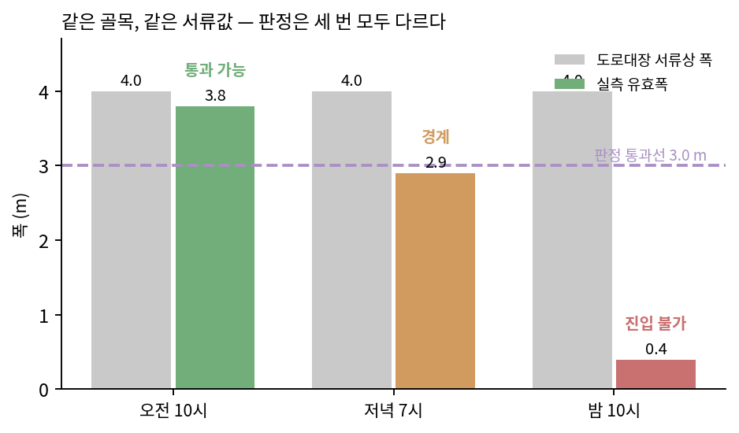
[그림 1] 같은 골목의 시간대별 유효 통행폭 — 서류상 폭은 고정이지만 판정은 매번 달라진다
[거시 환경: 골든타임 정책과 좁은 골목의 구조적 잔존]
- 소방 정책의 핵심 지표는 '골든타임 내 현장 도착률'이며, 도착 실패의 상당 부분이 진입 단계에서 발생한다. 그러나 도로 확폭은 도심 구축 주거지에서 사실상 불가능하므로, 물리적 개선이 아니라 정보 기반 우회로 대응해야 하는 영역이 계속 남는다.
- 지자체 CCTV는 방범·주정차 단속 목적으로 지속 증설되고 있어 영상 인프라 자체는 확대되는 추세다. 다만 개인정보보호법 제25조에 따라 영상 접근 권한은 엄격히 제한되며, 공공데이터로 개방되는 것은 메타데이터에 한정된다.
[미시 환경: 판정 가능한 데이터가 열려 있지 않다]
- 소방용수 공개율 5%(654개 중 31개), 전주 실측 좌표 미공개, 진입곤란지역 지정 자료 비공개. 통과 가능성 판정에 필요한 데이터는 존재하지만 개방되어 있지 않다.
- 도로폭 데이터는 개방되어 있으나 명목값(ROAD_BT)과 실측값의 괴리가 크다. 동일 구간을 ROAD_BT 2.00m, 실폭도로 트랜섹트 1.76m, 수치지도 트랜섹트 3.86m로 서로 다르게 기술한다. 즉 '도로폭 데이터가 있다'와 '통과 가능성을 판정할 수 있다'는 다른 문제다.
[수요자 니즈: 실시간 정보의 부재]
- 1차 소방관 인터뷰: 불법주차로 인한 출동 방해는 흔하며 원룸촌·구축 단독주택 밀집지에서 특히 심각하다. 기존 MDT에는 실시간 점유 정보가 없고, 골목 사전 인지는 공식 시스템 없이 개인 노하우에 의존한다. 인명 위급·대형화재가 아니면 강행 진입은 하지 않는다.
□ 유사 서비스 분석 및 비교
| 비교 항목 | 상용 내비게이션 (TMAP · 카카오내비) | Fire-Lane |
|---|---|---|
| 문제 정의 | 교통량 모델링 — 이 길이 얼마나 느린가 | 통과 가능성 모델링 — 이 길을 지나갈 수 있는가 |
| 대상 차량 | 승용차 기준. 물리적 통과 불가 구간이 거의 없음 | 차폭 2.5m급 소방차 기준. 통과 불가가 상시 발생 |
| 도로폭 취급 | 경로 산출에 반영하지 않음 | 수치지도 트랜섹트 도로경계 기준 최소 폭을 판정 입력으로 사용 |
| 실시간 입력 | 프로브 차량 속도 기반 혼잡도 | 영상 기반 유효 통행폭 (주정차 차량 점유 반영) |
| 회전 제약 | 미반영 | 노드 단위 회전 가능 판정. 간선(직진 폭)과 이중 통과 조건 |
| 관측 불가 구간 | 개념 없음 | GRAY로 명시 + 단속밀도·상가밀도 기반 사전확률 제시 |
| 오류 설계 | 대칭 (지연 예측 오차) | 비대칭 — 미탐 회피 방향으로 안전마진 편향 |
[분석 요약]
[T맵을 그대로 쓰지 않는 이유]
- TMAP API는 링크별 혼잡도를 낱개로 조회하는 구조가 아니라 완성된 경로를 반환하는 구조다. 따라서 우리 그래프의 모든 간선에 외부 혼잡도를 채워 넣는 방식이 API 구조상 성립하지 않는다. 이것이 자체 경로탐색을 구현하는 1차 근거이며, 경로 반경 제약 등 이용 조건은 부차적 사유다.
- 대상이 동명동 한정이므로 노드·간선·가중치를 직접 DB화해 탐색을 구현할 수 있는 규모다. 새로 만드는 부담보다 통과 가능성을 가중치에 직접 반영할 수 있다는 이점이 크다.
- 상용 내비게이션과 Fire-Lane은 경쟁 관계가 아니다. 교통체증 최적화는 상용 서비스가 이미 최고 수준이므로 그 영역을 재구현하지 않는다. 본 프로젝트는 상용 내비게이션이 아예 모델링하지 않는 축 하나에 집중한다.
- 따라서 통합 설계도 병합 방식이 아니라 병렬 비교 방식으로 한다. 같은 출발-도착 쌍에 대해 TMAP 추천 경로와 Fire-Lane 추천 경로를 나란히 제시하여 차이를 시각화한다. TMAP API는 링크별 혼잡도를 낱개로 조회하는 구조가 아니라 완성된 경로를 반환하는 구조이므로, 자체 그래프의 모든 간선에 혼잡도를 채우는 방식은 API 구조상 성립하지 않는다.
□ SWOT 분석
| 내부 | 강점 (S) | 약점 (W) |
|---|---|---|
| • 상용 서비스가 다루지 않는 문제를 정의했고 포지셔닝이 한 문장으로 설명된다 • 오류 비대칭을 설계에 반영 — '틀릴 수 있으므로 틀리는 방향을 설계했다'는 방어 논리 • 원천 데이터가 대장(sources.yaml)으로 관리되고 파이프라인이 단일 명령으로 재현된다 • 지면 고정 기준점 방식으로 카메라 위치 재현 제약을 제거 | • 실시간 CCTV 영상 접근 불가로 mock 스트림 대체 — 실증 범위 제한 • 세그먼트 수·판정 분포 확정(2026-09-17, 1,281구간). 폭 미산출 0 • 실측 표본 규모가 작아 폭 정확도 검증의 통계적 신뢰구간이 넓다 • GIS·인프라 역할이 1인에게 집중되어 병목 및 검증 누락 위험 | |
| 외부 | 기회 (O) | 위협 (T) |
| • 골든타임 확보 정책 기조로 진입곤란지역 관리 수요 지속 • 지자체 CCTV 인프라 증설 — 권한만 확보되면 관측 지점이 자동 확대 • 한전이 재난 구조 목적으로 소방에 전주 실측 좌표를 제공하는 선례 존재 (KR101515811B1 명세 근거) • 공공데이터 개방 확대 기조 | • 개인정보보호법 제25조 — 영상 접근 권한 확보가 기관 협조에 전적으로 의존 • 행정구역 개편(29110 → 12210)처럼 코드 체계 변경 시 파이프라인 불연속 • 야간·우천 시 검출 성능 저하 — 화재 출동이 몰리는 시간대와 겹침 • 판정 오류 발생 시 책임 소재 문제 — 보조 도구 포지셔닝으로 완화 필요 |
□ SWOT 교차 분석 기반 실행 전략
a. SO 전략 (강점 극대화 + 기회 포착)
[연동 인터페이스 선탑재로 권한 확보 즉시 전환]
- mock 스트림 서버와 실 CCTV를 동일한 RESTful 계약으로 추상화하여, 영상 접근 권한이 부여되는 시점에 판정 로직 수정 없이 소스만 교체되도록 설계한다. '권한만 주면 바로 붙는다'가 실무 연계 제안의 핵심 논거가 된다.
[재현 가능한 파이프라인을 이식성으로 전환]
- 지역 스코프가 설정값 하나로 분리되어 있으므로, 동명동 검증 완료 후 광주 전역·타 지자체 확장을 동일 코드로 시연한다.
b. ST 전략 (강점 활용 + 위협 극복)
[엣지 마스킹으로 법적 리스크 선제 차단]
- 원본이 서버로 넘어가는 순간 개인정보 수집에 해당하므로, 마스킹을 엣지에 배치해 서버가 개인정보를 보유하지 않는 구조를 만든다. 개인정보 관련 질의에 대한 단일 방어 논리로 사용한다.
[보조 도구 포지셔닝으로 책임 소재 위협 회피]
- 기존 출동 태블릿 시스템을 대체하거나 직접 연동하지 않는다. 상황실 근무자가 참고하는 독립 보조 도구로 한정하고, 모든 판정에 근거와 신뢰도를 함께 표기해 최종 판단을 사람이 하도록 설계한다.
c. WO 전략 (약점 보완 + 기회 활용)
[답사 1회로 세 가지 데이터를 동시 확보]
- 실측 자원이 부족하므로 같은 관측점을 오전·오후·야간 3회 촬영해 시간대별 통과 가능성 변화, 관측 신선도 근거, 야간 성능 데이터를 한 번에 확보한다. '14시 통과 가능 / 19시 불가'는 서비스 필요성 논거로도 사용한다.
[경계 대기 구간의 병렬 작업 배치]
- 행정구역경계 심사 대기 중에는 평가지표 정의, 그래프 방향성 결정, mock 서버 구조 설계, 소방서 인터뷰 등 선행 의존성이 없는 항목을 병렬로 진행한다.
d. WT 전략 (약점 최소화 + 위협 회피)
[정밀도 경쟁 대신 임계값 민감도 분석]
- 표본 부족 상태에서 폭 정밀도를 경쟁 지표로 삼지 않는다. 폭의 용도(1차 pruning · GRAY 판정 · 경로 가중치)는 모두 ±0.5m로 충분하다. 대신 경계 근처(1.8~2.2m) 구간이 몇 개이고 임계값이 뒤집히면 결론이 바뀌는지를 보이는 민감도 분석으로 방어한다.
[역할 재분배로 검증 누락 차단]
- 데이터·그래프·인프라가 1인에 집중되면 검증 없이 확정되는 상황이 반복된다. 평가지표·관측점 관리·프라이버시 파이프라인을 별도 담당자에게 배정하고, 모든 수치에 산출 코드 경로와 검증 상태를 강제 표기한다.
□ STP 전략
| Segmentation (고객 세분화) | [1차 사용자군: 119상황실] - 출동 지령과 경로 안내를 담당하며, 현장 도착 이전에 우회 판단이 가능한 유일한 지점. [관리자군: 소방본부 예방·대응 부서] - 진입곤란지역 지정·갱신과 소방용수 관리 책임 부서. [확장군: 지자체 도로·주차 정책 부서] - 불법주정차 단속 우선순위와 주차금지구역 설정 근거가 필요한 부서. |
|---|---|
| Targeting (목표시장 선정) | [1순위: 119상황실 보조 관제] - 1차 인터뷰에서 알림 전달 지점으로 상황실 단계가 가장 적절하다는 답변을 확보했고, 기존 시스템에 실시간 점유 정보가 없다는 공백이 확인되었다. [2순위: 진입곤란지역 관리 도구] - 실시간 판정이 아니라 정적 폭 데이터만으로도 즉시 가치를 제공할 수 있어, 영상 권한 확보 이전에도 도입 가능한 시장. |
| Positioning (차별화 전략) | [브랜드 슬로건] "TMAP은 얼마나 느린지 안다. Fire-Lane은 지나갈 수 있는지 안다." [사용자에게 비춰질 가치] - 더 빠른 길을 찾아주는 서비스가 아니라, 갈 수 없는 길을 미리 알려주는 서비스로 각인한다. - 판정 결과와 함께 근거(유효 통행폭·관측 시각·신뢰도)와 한계(GRAY 사각지대)를 동시에 제시하여, 맹신하지 않고 검증할 수 있는 도구로 포지셔닝한다. |
□ 추진 일정
| 일정 | 단계 | 내용 |
|---|---|---|
| 8/3 ~ 8/10 | 착수 | 대상 지역·검증 기관 확정 / 실현 가능성 조사(호모그래피·캘리브레이션·도로폭 소스·경로 알고리즘) / 1차 현장 실측 / 원천 데이터 확보 |
| ~ 8/17 | 기획 문서 | 프로젝트 제안서 · 요구사항 분석서 · 상세 설계서 작성 (멘토링 이전 완료) |
| ~ 8/15 | 기반 확정 | 행정구역경계 확보 → 정식 경계 재클립 → 노딩 → 세그먼트 수 확정 / 평가지표·베이스라인 정의(김재웅) / 그래프 방향성·일방통행 역주행 허용 여부 결정 / 소방서 정식 인터뷰(우지혜) / 펌프차 표준 제원 확보 |
| ~ 8/31 | 정적 계층 | 도로폭 산출(수치지도 주·실폭도로 폴백·교차로 5m 제외) / verdict 재분류 및 4색 분포 확정 / 그래프 구축 및 다익스트라·A* 동작 / 시나리오 자동 탐색 |
| ~ 9/15 | 현장 실측 | 관측점 선정 → 기준 지물 실측 → 오전·오후·야간 3회 촬영 / 실측 보조 웹 배포 / 레이저 거리계 확보 |
| ~ 9/30 | 비전 파이프라인 | 렌즈 왜곡 보정 → 호모그래피 → YOLO11-seg 연동 → 유효 통행폭 산출 / 프라이버시 마스킹 / 주정차 판별 |
| ~ 10/31 | 통합 | mock 스트림 서버 / FastAPI 서빙 API / 동적 상태 테이블 적재 / MapLibre 대시보드 연동 / TMAP 병렬 비교 뷰 |
| ~ 11/15 | 검증 | 폭 정확도 MAE 측정 / 베이스라인 대비 평가 / 임계값 민감도 분석 / 야간 성능 평가 |
| ~ 11/30 | 안정화 | EC2 배포 / CI 구성 / 문서 정리 / 발표 자료 작성 |
| 12/11 | 최종 발표 | 시연 및 성과 발표 |
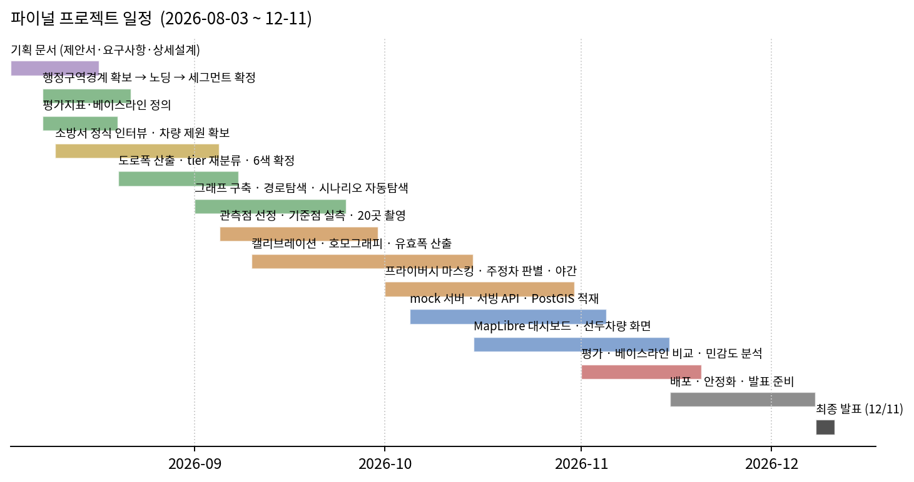
[그림 2] 파이널 프로젝트 일정 (2026-08-03 ~ 12-11)
□ 차별성
[통과 가능성이라는 새로운 축]
- 기존 경로탐색은 전부 '속도' 축 위에 있다. Fire-Lane은 '통과 가능 여부'라는 이진 제약을 그래프 위에 얹는다. RED 구간은 가중치가 큰 것이 아니라 비용이 무한대인 간선이며, 경로탐색에서 아예 배제된다.
[오류의 방향을 설계한 판정 체계]
- 미탐과 오탐의 비용이 대칭이 아니므로 임계값도 대칭이 아니다. 펌프차 미러 포함 전폭에 주행 여유를 더한 값을 판정 통과선으로 두고, 애매한 경우는 통과 불가 쪽으로 떨어뜨린다. 폭은 최소(도로경계)와 최대(벽~벽) 둘을 함께 내는데, 소방차는 구간의 평균 폭이 아니라 가장 좁은 병목을 통과하지 못하기 때문이다.
[소방관의 경험을 탐색 파라미터로 인코딩]
- 지금까지 출동 경로 판단은 운전자의 경험으로 이루어져 왔다. 룰 베이스로는 이 판단을 재현할 수 없지만, 선호 요소를 수치로 인코딩하면 탐색에 반영할 수 있다. 인터뷰에서 확보한 선호 요소(도로 유형, 경사, 회전 난이도, 상습 점유 회피 등)를 간선 가중치로 인코딩하고, A* 휴리스틱에는 방향성만 남긴다. 선호도를 휴리스틱에 직접 넣으면 허용성이 깨져 최적해가 보장되지 않으므로 두 곳을 분리하는 것이 핵심이다. 이것이 단순 내비게이션과 갈라지는 지점이다.
[카메라 고정 제약을 제거한 호모그래피 설계]
- 대응점을 카메라가 아니라 지면의 영구 지물(맨홀 모서리·보도블록 줄눈 교차점·연석 이음매)에 고정한다. 관측점당 1회 실세계 상대좌표를 실측해 두면, 이후에는 같은 지물이 프레임에 보이기만 하면 카메라가 어디에 서 있든 호모그래피가 매번 정확히 재계산된다. '매번 동일 위치에서 촬영해야 한다'는 제약이 사라지며, 실제 CCTV 배포 시에도 카메라 흔들림·재설치에 대한 자동 복구 수단이 된다.
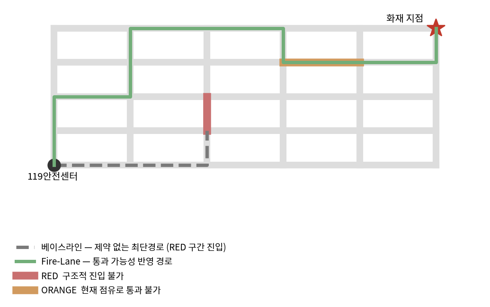
[그림 3] 베이스라인 최단경로와 Fire-Lane 경로의 비교 개념도
[사각지대를 감추지 않는 설계]
- CCTV가 없어 관측이 불가능한 구간을 GREEN이나 RED로 뭉뚱그리지 않고 GRAY로 분리 표기한다. 대신 단속밀도(건/100m), 상가 밀도, 음식점 비율, 도로폭을 결합한 사전확률을 제시한다. 시스템이 무엇을 모르는지 명시하는 것이 신뢰의 전제다.
□ 주요 리스크 및 대응
| 리스크 | 영향 | 대응 |
|---|---|---|
| 행정구역경계 심사 지연 (해소, 2026-08-11) | 세그먼트 수·등급 분포 확정 불가. 후속 단계 전체가 대기 | bbox 클리핑 기준으로 파이프라인을 선구축하고 경계 확보 시 재실행. 2026-08-11 경계 확보 후 재실행하여 산출단위를 확정했다(범위를 넓힐 때마다 같은 방식으로 재실행 · 현재 1,281). 이 대응 방식이 실제로 작동한 사례다. |
| 실측 자원 부족 | 폭 정확도 검증 표본 부족 | 정밀도 경쟁 대신 임계값 민감도 분석으로 전환. 이중 계산법(법선 트랜섹트/거리변환) 불일치 구간 우선 실측 |
| 야간 검출 성능 저하 | 화재 출동이 집중되는 시간대의 판정 신뢰도 하락 | 관측점별 야간 촬영을 답사 계획에 필수 포함. 저조도 향상·도메인 적응을 DL 과제로 편성 |
| 소방서 협조 지연 | 진입곤란지역 자료·차량 제원·소화전 좌표 미확보 | 미확보 상태에서도 성립하는 설계로 진행. 소화전 레이어는 좌표 확보 전까지 지도에서 제외 |
| 인력 편중 | 검증 없이 확정되는 오류 반복 | GIS를 1인 전담으로 분리하고 PM·평가지표·비전·인프라를 별도 배정. 모든 수치에 산출 코드 경로·검증 상태 강제 표기 |
| 시연 소재 부족 | 지도 화면 한 장으로 발표가 끝날 우려 | 관제 대시보드 외에 선두 차량용 태블릿 화면, 경로 1·2·3순위 비교, 시간대별 판정 변화 표를 별도 시연 항목으로 구성 |
| 실측 장비 미확보 | 5.5m 줄자로는 6m 이상 골목과 깊이 방향 기준점을 커버하지 못해 답사 회차가 늘어남 | 처짐 오차는 20m에서도 8cm로 정확도 요건 내임을 확인. 장비비 미지원 시 보급형 레이저 거리계를 팀 자비로 확보하고, 그마저 불가하면 지면 접지 측정·구간 분할 규칙을 강제 적용 |
| 축거·회전반경 미확보 | 내륜차 계산의 근거가 추정값에 머무름 | 소방청 「소방장비 기본규격」 소방펌프차 KFS-1-0073-2025-00 §3.3(2025-12-24 고시) 확보 완료. 축거·최소회전반경은 공식 규격에 없어 추정값으로 남는다(wheelbase_verified: false). 2026-08-06 현장 답사로 통과 하한 3.0m(차체 2.5 + 미러·조향 여유 0.5)를 확정했고, 국가 기준보다 보수적이므로 규정과 충돌하지 않는다. 축거·최소회전반경을 확보하면 내륜차를 재산출한다. |
□ 참고 자료
- 행정안전부 도로명주소 전자지도 — 도로구간(TL_SPRD_MANAGE) · 실폭도로(TL_SPRD_RW)
- 국토지리정보원 1:1,000 수치지형도 도로경계(주 소스) · 수치지도 2.0 도로경계면 N3A_A0010000(1:5,000 · 폴백)
- 국가교통정보센터 표준노드링크 — LINK · NODE · TURNINFO
- 소방청 전국 소방서 좌표 현황 (safety_firestation)
- 지방자치단체 불법주정차 단속 실적 자료 (2022-01 ~ 2023-10)
- 공공데이터포털 CCTV 표준데이터 · 상가(상권)정보 · 소방용수시설 표준데이터
- 개인정보보호법 제25조 (영상정보처리기기의 설치·운영 제한)
- 소방청 「건축위원회 표준 가이드라인」(2021.10) — 소방차 회전반경 기준 (원문 확보 진행 중)
- NFTC 401 소화전 수평거리 기준 · NFSC 109 옥외소화전 설치 기준
- 특허 KR101515811B1 — 전주 전산화번호 좌표 변환 (한전-소방 좌표 제공 근거 포함)
- Ultralytics YOLO11 공식 문서 — Segmentation 태스크
- OpenCV 공식 문서 — Camera Calibration and 3D Reconstruction (findHomography, undistort)
- MapLibre GL JS 공식 문서 / 공간정보 오픈플랫폼(브이월드) WMTS API 가이드
- NetworkX 공식 문서 — Shortest Paths (dijkstra_path, astar_path)
- SK텔레콤 TMAP API 문서 — 경로안내 API 응답 구조
- 광주·전남 소방 장비 현황 자료 (차종별 보유 대수) — 펌프차 252 / 구급차 159 / 구조차 55 / 물탱크차 42 / 고가차 27 / 화학차 25
- 소방청 소방차량 제작규격 (차종별) 및 제조사 카탈로그 — 확보 진행 중
- 국토지리정보원 항공정사영상 — 연도별 축척 기반 도로폭 대조 자료
Part II. 요구사항 분석서
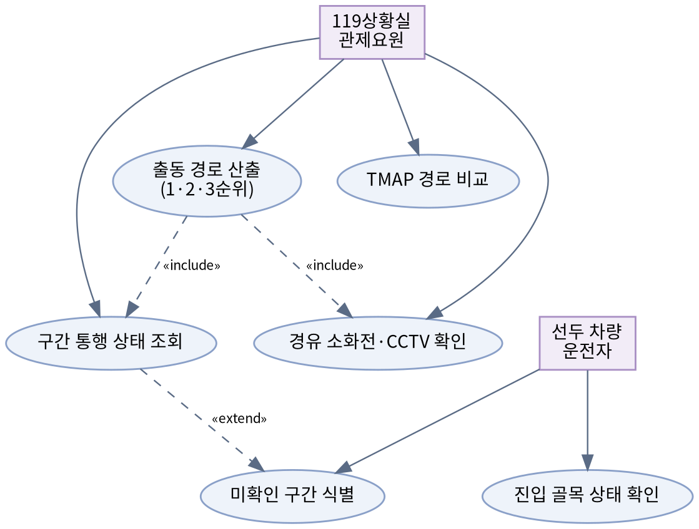
[그림 4] 유즈케이스 (1) 운영 — 119상황실 관제요원 · 선두 차량 운전자
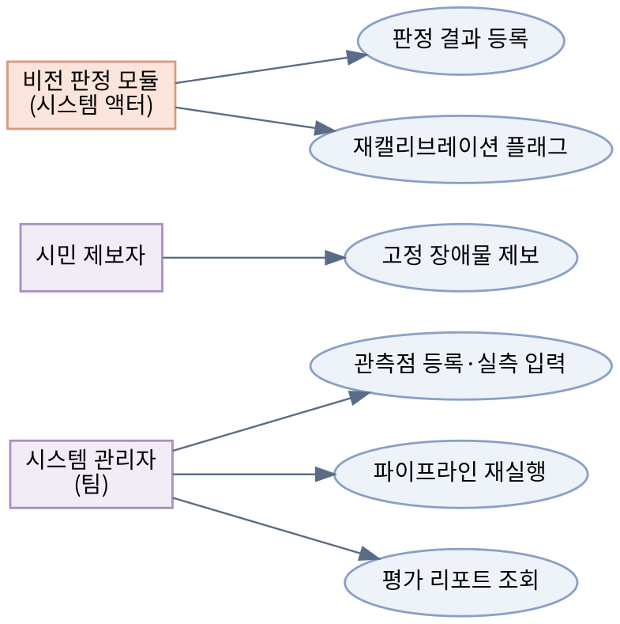
[그림 5] 유즈케이스 (2) 관리 · 시스템 — 관리자 · 시민 제보자 · 비전 판정 모듈
1. REQ-Fire-Lane 요구사항 체계도
□ REQ-DAT (데이터 수집 · 정규화)
• REQ-DAT-001: sources.yaml 대장 기반 원천 데이터 수집 자동화
• REQ-DAT-002: 좌표계 표준화 (연산 5186 / 표출 4326) 및 소스별 CRS 진단
• REQ-DAT-003: 행정구역경계 기준 클리핑 및 시군구코드 12210 필터
• REQ-DAT-004: 원본 SHA-256 및 산출 건수 자동 기록 (_manifest.json)
□ REQ-GEO (그래프 구축)
• REQ-GEO-001: 도로구간 노딩 — 교차점 기준 세그먼트 분할
• REQ-GEO-002: 표준노드링크 대조를 통한 위상 검증 및 연결요소 점검
• REQ-GEO-003: TURNINFO 기반 회전제한 반영
• REQ-GEO-004: 간선 길이 지오메트리 재계산 (ROAD_LT 사용 금지)
□ REQ-WID (도로폭 산출)
• REQ-WID-001: 수치지도 도로경계면 기반 법선 트랜섹트 폭 산출
• REQ-WID-002: 수치지도 미커버 구간 실폭도로 폴백
• REQ-WID-003: 평면교차점 실형상으로 교차부를 제외한 뒤 최소·최대 폭 산출
• REQ-WID-004: 이중 계산(트랜섹트/거리변환) 불일치 구간 검출
□ REQ-CLS (등급 판정)
• REQ-CLS-001: 판정 4종 (clear / needs_cv / blocked / unknown)
• REQ-CLS-002: 4색 상태 부여 및 통행 불가 원인(blocked_reason) 분리 기록
• REQ-CLS-003: CCTV 커버리지 판정 (주소 매칭 1차 / 좌표 버퍼 폴백)
• REQ-CLS-004: 안전마진 2.8m 기반 비대칭 임계 적용
□ REQ-VIS (영상 판정)
• REQ-VIS-001: 프레임 시퀀스 수집 인터페이스 (mock / 실 CCTV 공용 계약)
• REQ-VIS-002: 엣지 프라이버시 마스킹 — 번호판·얼굴 (전송 이전)
• REQ-VIS-003: YOLO11-seg 차량 세그멘테이션 및 바닥 접지선 추출
• REQ-VIS-004: 시간축 기반 주정차 / 주행 판별
• REQ-VIS-005: 호모그래피 변환 좌표계상 유효 통행폭 직접 측정
• REQ-VIS-006: 판정 결과 계약 스키마 전송 (seg_uid · 통행폭 · 시각 · 신뢰도)
□ REQ-RTE (경로탐색)
• REQ-RTE-001: 곱셈형 가중치 산출 (판정 페널티 · 점유 위험도)
• REQ-RTE-002: 다익스트라 / A* 이중 산출 및 실행시간 비교
• REQ-RTE-003: TMAP 추천 경로 병렬 호출 및 비교 표출
• REQ-RTE-004: 경로상 소화전·CCTV·회전 제약 경유 정보 산출
• REQ-RTE-005: 시나리오 자동 탐색 (우회 비용비 기준 출발-도착 쌍 역산)
□ REQ-API (서빙)
• REQ-API-001: serving 스키마 단일 소비 원칙 — 판정 로직 백엔드 일원화
• REQ-API-002: GeoJSON 세그먼트 조회 API (bbox 필터)
• REQ-API-003: 동적 상태 폴링 API (상태 컬럼 단일 갱신)
• REQ-API-004: 경로 산출 및 비교 API
□ REQ-UI (사용자 인터페이스)
• REQ-UI-001: MapLibre + 자체 정사영상 타일 기반 상황실 지도 대시보드
• REQ-UI-002: 세그먼트 상세 패널 (폭 · 판정 근거 · 신선도 · 커버리지)
• REQ-UI-003: 경로 비교 뷰 (Fire-Lane vs TMAP)
• REQ-UI-004: 현장 실측 보조 모바일 웹 (관측점 등록 · JSON 내보내기)
□ REQ-INF (백엔드 · 인프라)
• REQ-INF-001: 정적 계층 파일(GeoJSON) + 동적 상태 테이블 분리
• REQ-INF-002: mock 스트림 서버 (프레임 시퀀스 순차 반환)
• REQ-INF-003: Docker Compose 기반 EC2 단일 인스턴스 배포
• REQ-INF-004: GitHub Actions CI (pytest + ruff) 및 IAM Role 기반 접근 제어
□ REQ-EVL (평가 · 검증)
• REQ-EVL-001: 실측 대비 통행폭 오차(MAE) 측정
• REQ-EVL-002: 베이스라인(제약 없는 최단경로) 대비 정량 비교
• REQ-EVL-003: 임계값 민감도 분석 (경계 구간 1.8~2.2m)
• REQ-EVL-004: 관측 신선도 모델 및 신뢰도 감쇠 반영
2. 요구사항 ID 체계 정의
| 접두사 | 분류명 | 설명 |
|---|---|---|
| REQ-DAT | 데이터 수집·정규화 | 원천 데이터 대장 관리, 좌표계 표준화, 행정경계 클리핑, 산출 이력 기록 |
| REQ-GEO | 그래프 구축 | 도로구간 노딩, 위상 검증, 회전제한 반영, 간선 길이 재계산 |
| REQ-WID | 도로폭 산출 | 수치지도 주 소스 트랜섹트, 실폭도로 폴백, 교차로 제외 최소·최대 폭 산출 |
| REQ-CLS | 등급 판정 | 판정 4종 분류, 4색 상태, CCTV 커버리지 판정, 안전마진 적용 |
| REQ-VIS | 영상 판정 | 프레임 수집, 프라이버시 마스킹, 세그멘테이션, 주정차 판별, 유효폭 산출 |
| REQ-RTE | 경로탐색 | 가중치 설계, 다익스트라·A*, TMAP 병렬 비교, 시나리오 자동 탐색 |
| REQ-API | 서빙 | serving 스키마 단일 소비, GeoJSON API, 상태 폴링, 경로 API |
| REQ-UI | 사용자 인터페이스 | MapLibre 상황실 대시보드, 세그먼트 상세, 경로 비교 뷰, 실측 보조 웹 |
| REQ-INF | 백엔드·인프라 | 동적 상태 테이블 적재, mock 스트림 서버, Docker Compose 배포, CI 및 접근 제어 |
| REQ-EVL | 평가·검증 | 폭 정확도, 베이스라인 비교, 민감도 분석, 관측 신선도 |
3. 세부 기능 요구사항 정의서
| 요구사항 ID | 분류 | 요구사항명 | 상세 설명 | 우선순위 |
|---|---|---|---|---|
| REQ-DAT-001 | 데이터 | 원천 데이터 수집 자동화 | sources.yaml에 등록된 원천만 파이프라인에 진입시키고, ingest 단일 명령으로 대장에 등록된 원천의 수집·압축해제·정규화를 재현한다. | High |
| REQ-DAT-002 | 데이터 | 좌표계 표준화 | 거리·면적·버퍼 연산은 EPSG:5186, 웹 표출은 EPSG:4326으로 산출물을 두 벌 생성한다. .prj가 없는 소스는 set_crs로 강제 정의하고, Bessel 계열은 proj4 문자열이 아니라 EPSG 코드로 정의한다. | High |
| REQ-DAT-003 | 데이터 | 행정경계 클리핑 | 행정구역경계(읍면동) 확보 시 동명동 법정경계로 재클립한다. 시군구코드는 개편 후 코드 12210을 사용하며, 상가정보는 행정동명이 아니라 시군구코드로 필터한다. | High |
| REQ-DAT-004 | 데이터 | 산출 이력 자동 기록 | 파이프라인 실행마다 원본 SHA-256과 산출 건수를 _manifest.json에 자동 기록하여 수치의 재현 경로를 보장한다. | Medium |
| REQ-GEO-001 | 그래프 | 도로구간 노딩 | 도로명주소 도로구간은 도로명 단위로 그려져 교차로에서 분할되어 있지 않다. 교차점 기준으로 분할하여 세그먼트를 생성한다. 노딩 없이는 경로탐색이 성립하지 않는다. | High |
| REQ-GEO-002 | 그래프 | 위상 검증 | 표준노드링크(교차 노드 452 / 미분할 접점 7)를 정답지로 삼아 노딩 결과의 교차 노드 수와 연결요소 분포를 검증한다. | High |
| REQ-GEO-003 | 그래프 | 회전제한 반영 | TURNINFO 87건을 노드 단위 회전 가능 판정에 반영한다. 전 구간 적용 시 골목 대부분이 탈락하므로 시연 경로 코너를 우선 적용 범위로 한다. | Medium |
| REQ-GEO-004 | 그래프 | 간선 길이 재계산 | ROAD_LT는 클리핑 이전 원본 도로 전체 길이를 담고 있어 가중치에 사용할 수 없다. 모든 간선 길이는 지오메트리에서 재계산한다. | High |
| REQ-WID-001 | 도로폭 | 트랜섹트 폭 산출 | 수치지도 도로경계면을 주 소스로 중심선 법선 방향 트랜섹트를 생성해 폭을 샘플링한다. ROAD_BT는 명목 관리 폭이므로 판정에 사용하지 않는다. | High |
| REQ-WID-002 | 도로폭 | 실폭도로 폴백 | 수치지도가 도로면으로 그리지 않는 보행자 통로급 최협소 골목은 실폭도로로 폴백한다. width_src 컬럼에 소스를 기록한다. | High |
| REQ-WID-003 | 도로폭 | 교차로 제외 폭 산출 | 평면교차점(A0080000) 실형상 폴리곤 안의 샘플을 제외한 뒤 도로경계 기준 최소 폭을 width_min_m 으로, 건물 폴리곤 기준 벽~벽 최대 폭을 width_max_m 으로 확정한다. 교차부 형상이 없는 교차로에 한해 노드 반경 5m 로 폴백한다. 폭이 폭발하는 문제를 최솟값이 아니라 구간 제외로 해결한다. | High |
| REQ-WID-004 | 도로폭 | 이중 계산 검증 | 법선 트랜섹트와 거리변환 두 방법으로 폭을 계산하고 불일치 구간을 우선 검토한다. 단일 방법 사용 시 인접 폴리곤 경계에서 교차선 분할로 폭이 절반 이하로 계산되는 사고가 발생한다. | High |
| REQ-CLS-001 | 판정 | 판정 4종 분류 | 최대 폭이 3.0m 미만이면 blocked, 최소 폭이 7.0m 이상이면 clear, 그 사이는 needs_cv 로 분류하여 needs_cv 만 영상 판정 대상으로 한다. 7.0 = 통과 하한 3.0 + 양쪽 주차 2 x 2.0 이다. | High |
| REQ-CLS-002 | 판정 | 4색 상태 부여 | GREEN / YELLOW / RED / GRAY 네 가지만 사용한다. 색을 늘리면 관제요원의 판독 속도가 떨어지므로 5번째 색은 추가하지 않는다. 통행 불가의 원인은 별도 컬럼(blocked_reason)에 structural / occupancy로 기록하고 상세 패널에서만 노출한다. | High |
| REQ-CLS-003 | 판정 | CCTV 커버리지 판정 | CCTV 소재지 도로명 텍스트 매칭을 1차, 좌표 버퍼를 폴백으로 사용한다. CCTV 좌표는 주소 기반 지오코딩이라 도로 중심선과 8~14m 어긋난다. | High |
| REQ-CLS-004 | 판정 | 비대칭 임계 적용 | 펌프차 미러 포함 전폭 + 주행 여유를 판정 통과선으로 하고 경계 사례는 통과 불가 방향으로 판정한다. 미탐과 오탐의 비용 비대칭을 임계값 설계에 명시적으로 반영한다. | High |
| REQ-VIS-001 | 비전 | 프레임 시퀀스 수집 | mock 스트림 서버와 실 CCTV가 동일한 REST 계약으로 프레임 시퀀스를 반환한다. 단일 이미지가 아니라 타임스탬프가 부착된 시퀀스여야 한다. | High |
| REQ-VIS-002 | 비전 | 엣지 프라이버시 마스킹 | 번호판·얼굴 마스킹을 엣지에서 수행한 뒤 전송하여 서버가 개인정보를 보유하지 않도록 한다. 원본은 전송 대상이 아니다. | High |
| REQ-VIS-003 | 비전 | 차량 세그멘테이션 | YOLO11-seg로 car·motorcycle·bus·truck을 분할하고 마스크 최하단 행의 좌·우 끝(바닥 접지선)을 측정 기준으로 사용한다. bbox는 사용하지 않는다. | High |
| REQ-VIS-007 | 비전 | 미러 돌출분 보정 | 접지선 기준 측정값은 실제 통과 폭보다 넓게 나오므로(미탐 방향) 차종별 미러 돌출분을 상수로 가산한다. 보정 없이 접지선 값을 그대로 쓰지 않는다. | High |
| REQ-VIS-008 | 비전 | 유효 측정 범위 산출 | 픽셀당 실제 거리(GSD)가 임계를 넘는 지점부터는 미확인 구간으로 출력한다. 관측하지 못한 구간을 통과 가능으로 표기해서는 안 된다. | High |
| REQ-VIS-009 | 비전 | 정합 이탈(drift) 감지 | 고정 특징점의 이미지 좌표를 저장해 매 갱신 시 대조하고, 어긋나면 판정을 내지 않고 재캘리브레이션 플래그를 발생시킨다. 틀린 줄 모르고 값을 계속 산출하는 것이 가장 위험하다. | High |
| REQ-VIS-010 | 비전 | 카메라 설정 파일 관리 | 골목(카메라) 단위로 내부 파라미터, 설치 높이 h, 기준점 좌표쌍, GSD 임계, 고정 특징점을 담은 설정 파일을 관리한다. | High |
| REQ-VIS-004 | 비전 | 주정차 판별 | 연속 프레임에서 정지 상태가 유지되는 객체를 주차로 판정한다. 가상 중앙선 등 공간 휴리스틱은 골목에 적용되지 않으므로 사용하지 않는다. | High |
| REQ-VIS-005 | 비전 | 유효 통행폭 산출 | 호모그래피로 변환된 실좌표계 위에서 통행 가능 폭을 직접 측정한다. GIS 도로폭에서 감지 차폭을 빼는 방식은 오차가 이중 누적되므로 채택하지 않는다. | High |
| REQ-VIS-006 | 비전 | 판정 결과 전송 | seg_uid, passable_width_m, observed_at, confidence를 담은 계약 스키마로 결과를 전송한다. GIS→비전은 관측점 선정만, 비전→GIS는 판정 결과만 전달한다. | High |
| REQ-RTE-001 | 경로 | 곱셈형 가중치 | cost = length_m × (1 + α·판정페널티 + β·점유위험도). 덧셈형은 짧은 위험구간과 긴 안전구간의 비교를 왜곡한다. RED는 비용 무한대로 경로에서 배제한다. | High |
| REQ-RTE-002 | 경로 | 다익스트라 / A* 이중 산출 | 동일 그래프에 두 알고리즘을 적용하고 실행시간을 비교한다. A* 휴리스틱은 페널티 곱셈으로 인해 직선거리를 최소 배율로 나눈 값을 사용해야 최적해가 보장된다. | Medium |
| REQ-RTE-003 | 경로 | TMAP 병렬 비교 | 동일 출발-도착 쌍에 대해 TMAP 추천 경로와 Fire-Lane 추천 경로를 각각 산출해 나란히 제시한다. 두 결과를 병합하지 않는다. | Medium |
| REQ-RTE-004 | 경로 | 경유 정보 산출 | 간선 속성으로 관리되는 소화전 거리·CCTV·단속밀도·회전 가능 여부를 경로 단위로 집계해 제시한다. | Medium |
| REQ-RTE-006 | 경로 | 경로 1·2·3순위 제시 | 단일 최적 경로가 아니라 후보 3개를 순위와 함께 제시하고 선택은 관제요원이 한다. 모든 경로가 막힌 경우에도 가장 덜 나쁜 경로와 그 근거를 제시한다. | High |
| REQ-RTE-007 | 경로 | 선호도 인코딩 | 인터뷰로 확보한 소방관 선호 요소를 간선 가중치에 인코딩한다. A* 휴리스틱에는 선호도를 넣지 않는다. 허용성이 깨지면 최적해가 보장되지 않기 때문이다. | High |
| REQ-RTE-005 | 경로 | 시나리오 자동 탐색 | 제약 없는 최단경로 대비 RED 제외 최단경로의 비율이 임계값을 넘는 출발-도착 쌍을 자동 탐색하여 시연 시나리오를 선정한다. 시나리오 선정 자체를 산출물로 만든다. | High |
| REQ-API-001 | 서빙 | serving 스키마 단일 소비 | 프론트엔드와 QGIS 모두 serving 스키마만 조회한다. 판정 로직을 클라이언트에서 재계산하지 않는다. | High |
| REQ-API-002 | 서빙 | GeoJSON 조회 API | bbox 및 verdict 필터를 지원하는 세그먼트 GeoJSON 조회 API를 제공한다. | High |
| REQ-API-005 | 서빙 | 상시 사전계산 스케줄러 | 평상시 주기와 출동 시 주기를 분리해 상시 백그라운드로 각 구간 상태를 갱신한다. 출동 시점에는 계산이 아니라 조회만 수행하며, 판정 루프는 현장 도착 전까지 계속 갱신한다. | High |
| REQ-API-003 | 서빙 | 상태 폴링 API | 동적 계층은 status 컬럼 하나만 갱신하며 클라이언트 폴링으로 반영한다. 무거운 공간조인은 정적 계층에서만 수행한다. | High |
| REQ-API-004 | 서빙 | 경로 산출 API | 출발·도착 좌표와 알고리즘 종류를 입력받아 경로 지오메트리, 총 거리, 경유 정보, 배제된 간선 목록을 반환한다. | High |
| REQ-UI-001 | UI | 상황실 지도 대시보드 | MapLibre GL JS + 자체 정사영상 타일(z15~19) 위에 4색 등급 레이어를 표출한다. WMTS 타일 축 순서는 {z}/{y}/{x}이다. | High |
| REQ-UI-002 | UI | 세그먼트 상세 패널 | 선택한 세그먼트의 유효 통행폭, 폭 소스, 판정 시각, 신선도, CCTV 커버리지, 단속밀도를 표출한다. | High |
| REQ-UI-003 | UI | 경로 비교 뷰 | Fire-Lane 경로와 TMAP 경로를 동일 화면에 중첩 표출하고 거리·예상시간·통과 불가 구간 포함 여부를 비교한다. | Medium |
| REQ-UI-004 | UI | 실측 보조 모바일 웹 | 기존 지도 HTML에 얹는 형태로 구현하며 네이티브 앱은 만들지 않는다. 기준 지물 서술을 필수 입력 필드로 강제한다. HTTPS 배포가 선행되어야 위치 API가 동작한다. | Medium |
| REQ-INF-001 | 인프라 | 동적 상태 테이블 적재 | 정적 계층(도형·폭·verdict·커버리지)과 동적 계층(status)을 분리 적재한다. 정적은 월 1회, 동적은 수 초~분 단위로 갱신한다. | High |
| REQ-INF-002 | 인프라 | mock 스트림 서버 | FastAPI 기반으로 사전 촬영 프레임을 타임스탬프 순서대로 반환한다. 실 CCTV 연동 시 동일 계약으로 교체 가능해야 한다. | High |
| REQ-INF-003 | 인프라 | Docker Compose 배포 | 현재 배포는 GitHub Pages 정적 배포이며 web/data 를 계약으로 읽는다. FastAPI · 상태 DB · EC2 는 실시간 판정 연동 시점의 후속 설계다. | Medium |
| REQ-INF-004 | 인프라 | CI 및 접근 제어 | GitHub Actions로 pytest·ruff를 실행한다. EC2→S3 접근은 IAM Role을 사용하며 액세스키를 코드에 포함하지 않는다. Budgets 예산 알림을 설정한다. | Medium |
| REQ-EVL-001 | 평가 | 폭 정확도 측정 | 현장 실측값 대비 산출 통행폭의 평균절대오차(MAE)를 측정한다. 목표 허용 오차는 ±0.5m이다. | High |
| REQ-EVL-002 | 평가 | 베이스라인 비교 | 제약 없는 최단경로(현행 방식)와 Fire-Lane 경로를 동일 시나리오에서 비교하여 RED 진입 건수와 우회 비용 증가율을 산출한다. | High |
| REQ-EVL-003 | 평가 | 민감도 분석 | 임계값 경계 구간(1.8~2.2m)의 세그먼트 수와, 임계값 변동 시 등급 및 경로 결론이 뒤집히는 범위를 제시한다. | High |
| REQ-EVL-004 | 평가 | 관측 신선도 | 경과 시간과 해당 도로의 단속밀도를 입력으로 신뢰도 감쇠 함수를 정의하고, 일정 임계 이하로 떨어진 판정은 GRAY로 강등한다. | High |
4. 비기능 요구사항 (NFR)
□ 정확성 및 안전성 (Accuracy & Safety)
• NFR-ACC-001 (오류 비대칭 보장): 판정 오류 중 미탐(통과 불가 구간을 통과 가능으로 판정)은 0건을 목표로 하며, 오탐은 허용한다. 두 오류의 비용이 대등하지 않으므로 임계값·마진·경계 처리 전부가 미탐 회피 방향으로 편향되어야 한다.
• NFR-ACC-002 (폭 산출 허용 오차): 현장 실측 대비 통행폭 오차는 ±0.5m 이내여야 한다. 폭의 세 가지 용도(1차 pruning, GRAY 판정, 경로 가중치) 모두 이 수준으로 충분하며, 그 이상의 정밀도를 목표로 하지 않는다.
• NFR-ACC-003 (판정 근거 제시): 모든 판정 결과는 산출 근거(폭 값, 폭 소스, 관측 시각, 신뢰도)를 함께 반환해야 하며, 근거 없이 색상만 표출해서는 안 된다.
• NFR-ACC-004 (관측 신선도 표기): 판정 결과에는 관측 경과 시간이 반드시 표기되어야 하며, 신선도가 임계 이하인 판정은 실시간 상태가 아니라 GRAY로 표시되어야 한다.
□ 성능 및 가용성 (Performance & Availability)
• NFR-PER-001 (경로 산출 응답): 동명동 스코프 그래프(도로구간 1,528 / 그래프 엣지 3,470)에서 단일 출발-도착 경로 산출은 1초 이내에 완료되어야 한다.
• NFR-PER-002 (지도 초기 로딩): 전체 세그먼트 GeoJSON 초기 로딩은 3초 이내여야 하며, 대용량 응답은 bbox 필터로 분할 제공한다.
• NFR-PER-003 (상태 갱신 지연): 영상 판정 결과가 서버에 도달한 시점부터 대시보드에 반영되기까지의 지연은 폴링 주기를 포함해 10초 이내여야 한다.
• NFR-PER-004 (계층 분리): 무거운 공간조인은 정적 계층(월 1회 갱신)에서만 수행하고, 동적 갱신은 상태 컬럼 단일 UPDATE로 제한하여 실시간 부하를 억제한다.
□ 보안 및 법규 준수 (Security & Compliance)
• NFR-SEC-001 (원본 영상 미전송): 번호판·얼굴 마스킹은 엣지에서 수행되어야 하며, 마스킹되지 않은 원본 프레임은 어떤 경우에도 서버로 전송되거나 서버에 저장되어서는 안 된다.
• NFR-SEC-002 (영상 접근 권한): 실 CCTV 영상 연동은 정당한 권한이 부여된 경우에만 활성화되며, 권한 없는 상태에서는 mock 소스만 동작해야 한다.
• NFR-SEC-003 (자격증명 관리): EC2에서 S3 접근은 IAM Role로 수행하고 액세스키를 코드·이미지·환경파일에 하드코딩해서는 안 된다. 루트 계정은 최초 설정 외 사용을 금지한다.
• NFR-SEC-004 (비용 통제): AWS Budgets 예산 알림을 필수 설정하여 EC2 상시 구동으로 인한 비용 이탈을 조기 탐지한다.
□ 운영성 및 재현성 (Maintainability & Reproducibility)
• NFR-MNT-001 (파이프라인 재현): 원천 데이터에서 최종 산출물까지 단일 명령으로 재실행 가능해야 하며, 동일 입력에 대해 동일 결과가 산출되어야 한다.
• NFR-MNT-002 (수치 추적성): 문서에 기재되는 모든 수치는 산출 코드가 레포에 존재하고 입력 원본이 sources.yaml에 등록되어 있어야 한다. 세 조건 중 하나라도 충족하지 않으면 본문에 사용하지 않는다.
• NFR-MNT-003 (원본 불변): data/raw는 불변으로 취급하며 버전 관리에서 제외하고, 명명 규칙(기관_데이터_범위_기준일)을 강제한다.
• NFR-MNT-004 (단일 산출 경로): 지도 화면은 단일 구현체만 유지한다. 동일 기능의 화면을 두 벌 유지하면 한쪽이 구버전 데이터를 물고 남는다.
□ 호환성 (Compatibility)
• NFR-CMP-001 (좌표계 일관성): 모든 거리·면적·버퍼 연산은 EPSG:5186에서 수행되어야 하며, 4326 좌표에 대한 미터 단위 버퍼 연산은 금지한다.
• NFR-CMP-002 (행정코드 대응): 시군구코드 개편(29110 → 12210)을 반영하며, 구 코드를 유지하는 필드(상가정보 건물관리번호)는 조인키로만 사용한다.
• NFR-CMP-003 (브라우저 지원): 대시보드는 최신 Chrome·Edge에서 정상 동작해야 하며, 실측 보조 웹은 모바일 브라우저에서 위치 API가 동작하도록 HTTPS로 제공되어야 한다.
5. 제약사항 및 전제
| 구분 | 내용 |
|---|---|
| 법적 제약 | 개인정보보호법 제25조에 따라 공공 CCTV 실시간 영상은 정당한 권한자만 열람 가능하다. 본 MVP는 mock 스트림으로 대체한다. |
| 데이터 제약 | 행정구역경계·건물 폴리곤은 2026-08-11 확보 완료. 1:1,000 수치지형도 도엽 20장과 가로등 현황(동구 3,805등)은 2026-08-12 확보했다. 다만 가로등 좌표는 지번 대표점(264지점)이므로 개별 폴 위치가 아니며, 지점 단위 마커(등 수는 굵기, 반경 50m 원으로 불확실성 표기)와 구간별 등 수(light_count)로 사용한다. 소화전 좌표·전주 좌표·화재 출동 이력은 여전히 미확보다. |
| 범위 제외 | 출동 태블릿 내비게이션 등 기존 국가 기관 시스템과의 직접 연동, 전주 등 도로 돌출 장애물 레이어, 실시간 CCTV 영상 수신은 범위에서 제외한다. |
| 미확정 항목 | 그래프 방향성 및 일방통행 골목의 역주행 허용 여부, 회전 판정 적용 범위, 단면 스캔 간격(0.5m vs 1m), GSD 임계값은 착수 전 확정한다. 확정 이전 구현은 재작업을 유발한다. |
| 검증 대기 | 펌프차·물탱크차 표준 제원(폭·회전반경), 미러 돌출분, 주행 여유 0.3m, 회전반경 기준은 소방청 소방차량 제작규격 및 소방서 정식 인터뷰로 검증한다. 통과 하한 3.0m 는 소방청 「2025 화재현장 골든타임 확보 종합대책」의 진입불가 기준(폭 2m 이하)에 차량 전폭 2.5m + 미러·조향 여유 0.5m 를 더한 값이다. clear 하한 7.0m 는 여기에 양쪽 주차 2 x 2.0m 를 더한 것이다. |
| 종결된 사항 | 고정 장애물(전봇대·대형 쓰레기통) 위치 데이터는 공개 자료가 존재하지 않음을 조사로 확인했다. 별도 확보를 중단하고 구청 협조 요청 및 시민 제보로 대체한다. 기준점 자동 검출은 필요 없는 작업으로 결론지어 리스크에서 제외한다. |
6. 요구사항 변경 이력
| 버전 | 작성일 | 변경 내용 | 작성자 |
|---|---|---|---|
| v1.0 | 2026-08-10 | 최초 작성. REQ-DAT/GEO/WID/CLS/VIS/RTE/API/UI/INF/EVL 10개 분류 체계 정의 | 오창준 |
Part III. 상세 설계서
1. 시스템 아키텍처
□ 전체 파이프라인
[프레임 획득] mock CCTV 서버 (실배포 시 실제 CCTV API로 교체)
↓
[엣지 마스킹] 번호판·얼굴 마스킹 후 전송 (원본 미전송)
↓
[YOLO11-seg] 차량 탐지·세그멘테이션 → 바닥 접지선 추출
↓
[주정차 판별] 연속 프레임 정지 여부 판정 (ByteTrack)
↓
[호모그래피] 픽셀 좌표 → 실세계 미터 좌표
↓
[유효 통행폭] 변환 좌표계 위에서 직접 측정 + 미러 돌출분 가산
↓
[유효 범위 판정] GSD 임계 초과 구간은 '미확인'으로 분리 출력
↓
[등급 판정] 4색 체계 + confidence + 불가 원인 기록
↓
[경로탐색] networkx 다익스트라 / A*
↓
[서빙] serving 스키마 → GeoJSON → MapLibre 대시보드
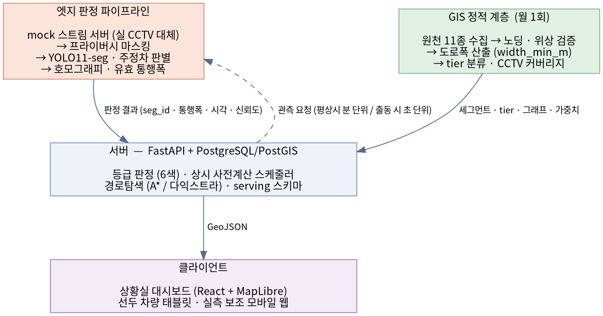
[그림 6] 시스템 아키텍처 — 엣지 판정 · GIS 정적 계층 · 서버 · 클라이언트
□ 계층 구조
| 계층 | 갱신 주기 | 내용 |
|---|---|---|
| 정적 계층 | 월 1회 | 세그먼트 도형, width_min_m, width_max_m, width_src, verdict, cctv_coverage, enforce_per_100m, hydrant_dist_m. 공간조인·노딩 등 무거운 연산은 전부 이 계층에서 수행한다. |
| 동적 계층 | 수 초 ~ 분 | current_status 컬럼 하나만 갱신한다. '동적'은 DB 엔진의 성질이 아니라 클라이언트 폴링 루프와 얇은 상태 컬럼의 조합에서 나온다. |
□ 트리거 타이밍 — 상시 사전계산, 출동 시 조회
출동이 발생한 뒤에 경로를 계산하기 시작하면 늦는다. 각 구간의 상태를 상시 백그라운드로 갱신해 DB에 적재해두고, 출동 시점에는 조회만 수행한다.
| 모드 | 갱신 주기 | 동작 |
|---|---|---|
| 평상시 | 느슨 (분 단위) | 전체 needs_cv 구간을 순회하며 상태를 갱신한다. 자원 소모를 억제하는 것이 목적이다. |
| 출동 시 | 조밀 (초 단위) | 산출된 경로 상의 구간만 집중 재확인한다. 판정 루프는 현장 도착 전까지 종료하지 않는다. |
이 설계가 관측 신선도 문제와 직결된다. 폭을 측정했을 때는 차가 없었는데 출동 도중에 차가 들어오는 상황이 실제로 발생하므로, 1회 판정으로 종료하는 구조는 성립하지 않는다.
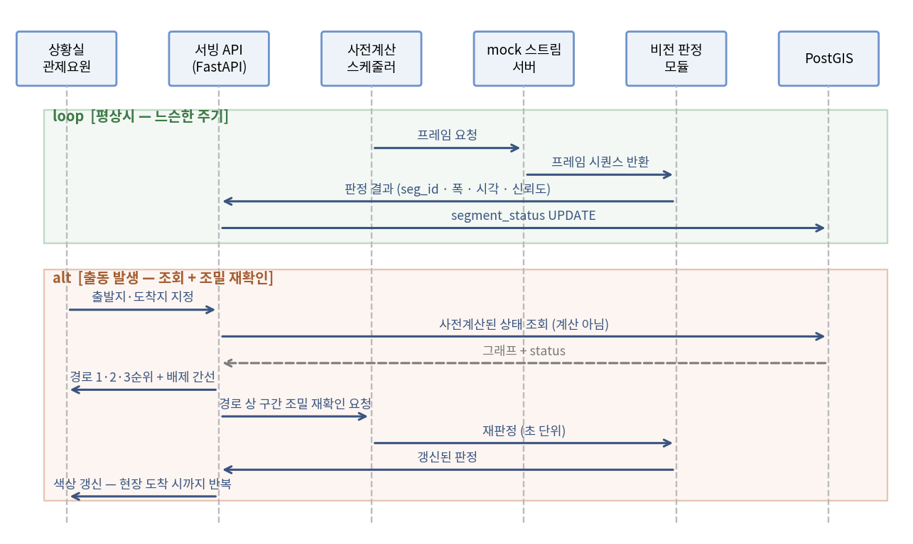
[그림 7] 시퀀스 다이어그램 — 평상시 상시 사전계산과 출동 시 조회 · 재판정 루프
□ 모듈 경계 — GIS ↔ 비전
접점은 정확히 두 개다. 그 외 방향의 데이터 이동은 존재하지 않는다.
GIS ──[관측점 선정]──▶ 비전 어느 골목의 어느 지점을 촬영할지 GIS가 정한다
GIS ◀──[판정 결과]──── 비전 seg_uid + 통행폭 + 관측 시각 + 신뢰도
GIS 도로폭은 호모그래피의 입력으로 들어가지 않는다. 이 방향의 데이터 흐름이 존재한다는 오해가 이전 설계에서 지적도 캘리브레이션 시도로 3주를 소모시켰다.
[비전 → GIS 계약 스키마]
{
"seg_uid": "DM-192942-283921-YM7N",
"obs_id": "OBS-001",
"passable_width_m": 2.8,
"observed_at": "2026-08-09T14:03:00+09:00",
"confidence": 0.82,
"model_ver": "yolo11n-seg@2026-08"
}
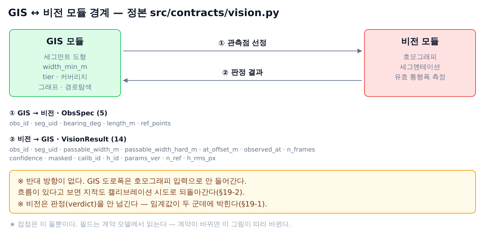
[그림 8] GIS ↔ 비전 모듈 경계 — 접점은 관측점 선정과 판정 결과 두 개뿐이다
2. 데이터 설계
□ 주요 원천 데이터 — 전수는 sources.yaml 대장이 정본이다
| 키 | 데이터 | 좌표계 | 동명동 건수 | 용도 |
|---|---|---|---|---|
| road_link | 도로명주소 도로구간 | 5179 | 1,812 | 그래프 뼈대 (노딩 필수) |
| road_rw | 도로명주소 실폭도로 | 5179 | 2,371 | 폭 폴백 소스 |
| ngii_road | 수치지도 도로경계면 N3A_A0010000 | 5179 | 3,740 | 폭 주 소스 |
| node_link | 표준노드링크 LINK | 5186 | 1,366 | 위상 정답지 |
| node_point | 표준노드링크 NODE | 5186 | 968 | 교차로 판정 |
| turn_restriction | 회전제한 TURNINFO | — | 87 | 노드 회전 판정 |
| cctv | CCTV 표준데이터 | 4326 | 27지점 / 86대 | 커버리지 판정 |
| fire_station | 소방서·119안전센터 | 4326 | 3 | 경로 출발점 |
| poi_store | 상가(상권)정보 | 4326 | 1,070 | 주차 압력 프록시 |
| enforcement | 불법주정차 단속 | 좌표 없음 | 85,380 | GRAY 사전확률 |
| hydrant | 소방용수 집계 | 좌표 없음 | — | 논거 (레이어 제외) |
| ortho | 항공정사영상 4도엽 | 5186 | — | 대응점 보조 |
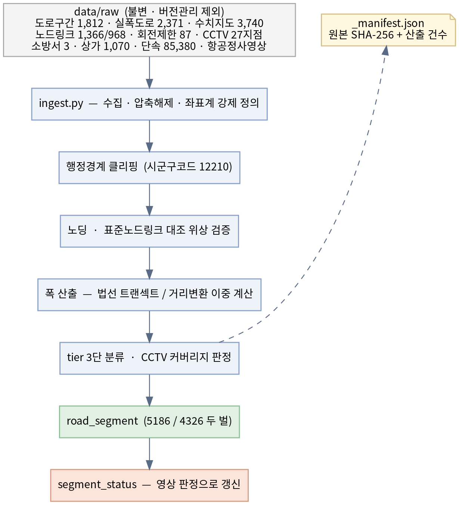
[그림 9] 데이터 흐름도 — 원천 데이터에서 serving 스키마까지
□ 좌표계 표준 및 주의사항
- 거리·면적·버퍼 연산: EPSG:5186 (중부원점 GRS80) / 웹 표출·GeoJSON: EPSG:4326. 산출물은 항상 두 벌로 생성한다.
- 4326 좌표에서 buffer(3)을 호출하면 단위가 '도'이므로 반경 약 330km 원이 만들어진다. 좌표계 확인 없는 버퍼 연산을 금지한다.
- 도로명주소 전자지도는 .prj 파일이 없어 set_crs로 5179를 강제 정의해야 한다. 수치지도의 .cpg는 cp949가 아니라 UTF-8이다.
- 항공정사영상은 5186으로, 수치지도(5179)와 다르다. 중첩 시 반드시 변환한다.
- Bessel 계열(5174~5178)은 proj4 문자열을 직접 작성하지 않고 EPSG 코드로 정의한다. towgs84 누락 시 약 390m, 5174를 5181로 잘못 정의하면 약 316m 오차가 발생하며, 이 크기의 오차는 축척을 줄이면 정상으로 보이므로 발견이 늦다.
□ 테이블 명세서
[ road_segment ] 노딩 완료된 도로 세그먼트 — 정적 계층 (그래프 간선)
| 컬럼 | 타입 | 설명 |
|---|---|---|
| seg_uid | text PK | 세그먼트 식별자. 실행 간 유지되는 키 (DM-192942-283921-YM7N 형식) |
| geom | geometry(LineString, 5186) | 중심선 지오메트리 |
| road_name | text | 도로명 (단속 이력 조인키) |
| node_from / node_to | text FK | 시작·종료 노드 식별자 |
| length_m | numeric | 지오메트리에서 재계산한 길이. ROAD_LT 미사용 |
| width_max_m | numeric | 건물 폴리곤 기준 벽~벽 최대 폭. 606/1,281 만 값이 있다 |
| width_min_m | numeric | 도로경계 기준 최소 폭. 확실히 비어 있는 폭 |
| width_src | text | ngii | silpok |
| road_bt | numeric | 도로명주소 명목 폭. 대조용으로만 보존하며 판정 사용 금지 |
| verdict | text | clear | needs_cv | blocked | unknown |
| cctv_coverage | boolean | CCTV 커버 여부 (주소 매칭 1차 / 좌표 버퍼 폴백) |
| cctv_ids | text[] | 커버하는 CCTV 식별자 배열 |
| enforce_per_100m | numeric | 단속밀도 (건/100m) — 점유 위험도 입력 |
| hydrant_dist_m | numeric | 최근접 소화전까지 거리 (좌표 확보 시) |
| turn_ok | boolean | 노드 회전 가능 여부 판정 결과 |
| updated_at | timestamptz | 정적 계층 갱신 시각 |
[ segment_status ] 동적 계층 — 실시간 상태 단일 테이블
| 컬럼 | 타입 | 설명 |
|---|---|---|
| seg_uid | text PK/FK | road_segment 참조 |
| status | text | GREEN | YELLOW | RED | GRAY |
| blocked_reason | text | RED일 때만 — structural(구조적 협소) | occupancy(현재 점유). 색이 아니라 상세 패널에서 구분 |
| passable_width_m | numeric | 최근 판정된 유효 통행폭 |
| confidence | numeric | 판정 신뢰도 0~1 |
| observed_at | timestamptz | 관측 시각 — 신선도 계산 입력 |
| freshness | numeric | 경과시간·단속밀도 기반 감쇠 신뢰도 |
| source | text | static | vision | fallback |
[ observation_point ] 관측점 — GIS 1급 개체 (카메라를 세우는 지점)
| 컬럼 | 타입 | 설명 |
|---|---|---|
| obs_id | text PK | OBS-001 형식 |
| seg_uid | text FK | 소속 세그먼트 |
| geom | geometry(Point, 5186) | 관측점 좌표 (보조 정보) |
| landmark_desc | text | 기준 지물 서술. 예: 장동로 서쪽 끝에서 세 번째 맨홀 |
| ref_points | jsonb | 기준 지물별 id·설명·실세계 상대좌표 배열 |
| ref_image | text | 기준 사진 경로 (기준 지물이 프레임에 보이는 사진) |
| slope_flag | boolean | 경사 구간 여부 — 지면 평탄 가정 위반 표시 |
[ observation_session ] 관측 세션 — 촬영 회차별 기록
| 컬럼 | 타입 | 설명 |
|---|---|---|
| session_id | text PK | 세션 식별자 |
| obs_id | text FK | 관측점 참조 |
| captured_at | timestamptz | 촬영 시각 |
| illum | text | day | evening | night |
| homography | jsonb | 해당 세션의 3×3 H 행렬 |
| reproj_error_px | numeric | RANSAC 재투영 오차 (H 품질 지표) |
| video_uri | text | 원본 영상 경로 (엣지 보관, 서버 미전송) |
[ vision_result ] 영상 판정 결과 이력
| 컬럼 | 타입 | 설명 |
|---|---|---|
| result_id | bigserial PK | 결과 식별자 |
| obs_id / seg_uid | text FK | 관측점 및 대상 세그먼트 |
| passable_width_m | numeric | 호모그래피 좌표계상 측정된 유효 통행폭 |
| parked_count | int | 주차로 판정된 차량 수 |
| observed_at | timestamptz | 관측 시각 |
| confidence | numeric | 판정 신뢰도 |
| model_ver | text | 모델 버전 (재현성 추적) |
[ cctv / fire_station / hydrant ] 참조 지물 레이어
| 컬럼 | 타입 | 설명 |
|---|---|---|
| id | text PK | 식별자 |
| geom | geometry(Point, 5186) | 좌표 |
| address | text | 소재지 도로명주소 (커버리지 주소 매칭 입력) |
| cam_count | int | CCTV 한정 — 지점당 카메라 대수 |
| kind | text | 소방서 | 119안전센터 / 지상식 | 지하식 |
[ route_log ] 경로 산출 이력 — 평가 및 시연 재현용
| 컬럼 | 타입 | 설명 |
|---|---|---|
| route_id | bigserial PK | 산출 식별자 |
| origin / dest | geometry(Point, 5186) | 출발·도착 좌표 |
| algorithm | text | dijkstra | astar | baseline | tmap |
| path_seg_uids | text[] | 경유 세그먼트 배열 |
| total_length_m | numeric | 총 거리 |
| excluded_seg_uids | text[] | RED로 배제된 간선 목록 |
| elapsed_ms | int | 탐색 소요 시간 (알고리즘 비교용) |
| created_at | timestamptz | 산출 시각 |
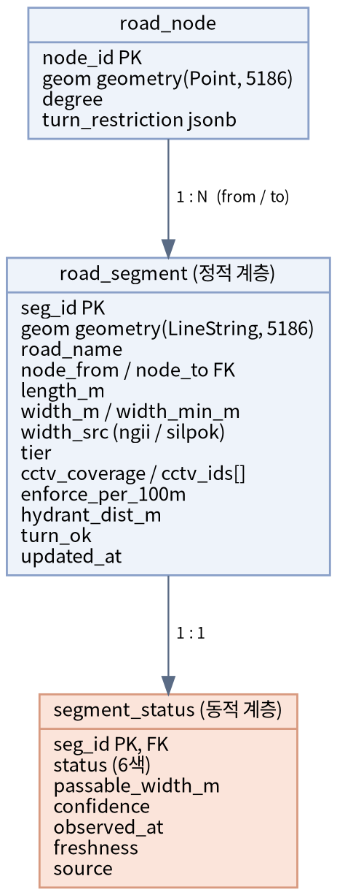
[그림 10] ERD (1) 판정 코어 — road_node · road_segment · segment_status
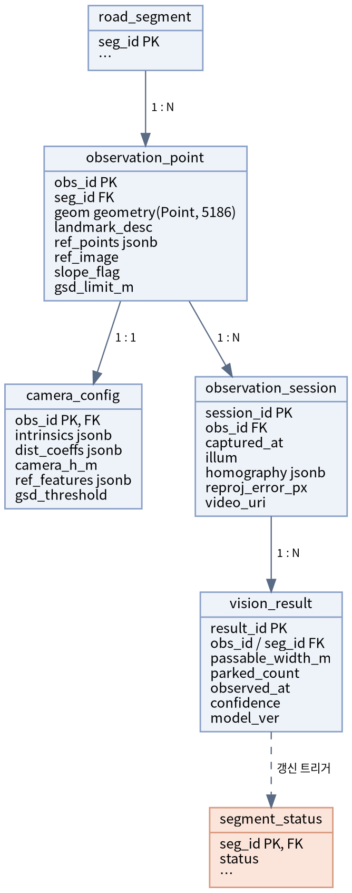
[그림 11] ERD (2) 관측 및 판정 이력 — observation_point · camera_config · observation_session · vision_result
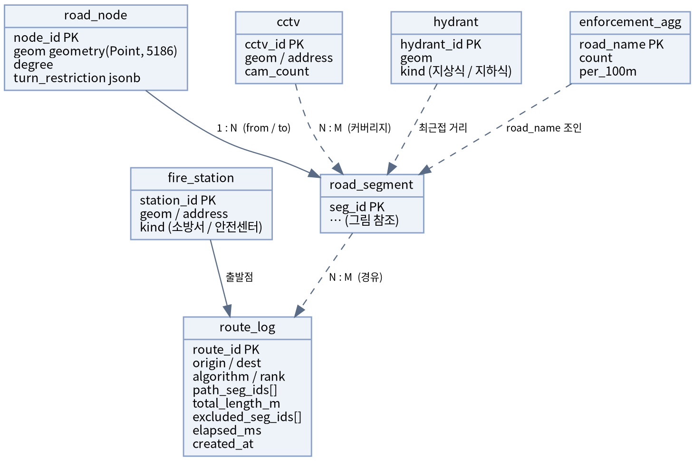
[그림 12] ERD (3) 참조 레이어 — cctv · fire_station · hydrant · enforcement_agg · route_log
3. 도로폭 산출 상세 설계
□ 소스 선정 근거
도로명주소 ROAD_BT는 명목 관리 폭이며 실측값이 아니다. 값의 90%가 정수이고 30%(1,812건 중 547건)가 정확히 2.0에 몰려 있다. 동일 구간을 세 방법으로 측정한 결과는 다음과 같다.
| 소스 | 측정 방식 | ROAD_BT=2.0 구간의 실제 폭 |
|---|---|---|
| 도로명주소 ROAD_BT | 명목 관리 폭 | 2.00 m |
| 실폭도로 TL_SPRD_RW | 법선 트랜섹트 | 1.76 m |
| 수치지도 N3A_A0010000 | 법선 트랜섹트 | 3.86 m |
ROAD_BT는 실제보다 크게 나오는 방향이며, 이는 미탐(막혔는데 통과 가능으로 판정) 쪽으로 편향된다. 오류 비대칭 설계상 가장 위험한 방향이므로 판정 입력에서 배제한다. 다만 컬럼명이 그럴듯하여 반드시 누군가 다시 사용하게 되므로, road_bt 컬럼은 대조용으로만 보존하고 사용 금지를 스키마 주석에 명시한다.
수치지도와 실폭도로는 경쟁 관계가 아니라 상보 관계다. 수치지도는 넓은 도로를 정확히 묘사하지만 보행자 통로급 최협소 골목은 도로면으로 그리지 않는다. 표본 100개 중 수치지도 커버는 70개이며, 나머지를 실폭도로가 메운다.
□ 배제한 데이터와 그 근거
- ROAD_BT(도로명주소 명목 폭): 84% 구간에서 과대하며 미탐 방향이다. 폭 값으로는 금지한다.
- 화재 연간통계: 읍면동 컬럼이 없다. 시군구까지만 집계된다.
- 단속이력의 시간 정보: 14시가 39.1%로 입력 기본값 오염이다. 시간대 분석에 쓸 수 없다. 다만 빈도는 유효하며 고유 장소 2,123개가 상습주차 추정 모델의 레이블이 된다. 출동 시점의 상태가 아니라 사전 위험도라는 구분을 흐리지 않는다.
- 공영주차장: 노외 64 / 노상 1로 유효폭과 무관하다.
- 공개DEM: 90m 격자라 동명동이 12×12 픽셀이다.
- 한전 전주: 좌표가 없고 전산화번호만 제공된다.
- 지적도(소유권 경계): 소유권 경계는 통행 노면과 다르다.
- 정밀도로지도: 광주는 광산구·북구 시범운행지구만 대상이며 동구는 제외다.
'왜 그 데이터를 안 썼는가'는 심사에서 반드시 나오는 질문이다. 배제는 누락이 아니라 확인 후의 판단이며 그 근거를 여기 남긴다.
□ 산출 절차
1. 세그먼트 중심선을 일정 간격으로 샘플링하고 각 샘플점에서 법선 방향 트랜섹트를 생성한다.
2. 트랜섹트와 도로경계면 폴리곤의 교차 구간 길이를 폭 샘플로 수집한다.
3. 평면교차점(A0080000) 실형상 폴리곤 안의 샘플을 제거한다. 고정 반경은 작은 교차부에서 표본을 과잉 제거하고 큰 교차부에서는 오염을 흘리므로, 실측 형상 2,025개를 우선 신뢰하고 형상이 없는 교차로만 반경 5m 로 폴백한다. 중심선이 교차로 폴리곤 위를 지날 때 폭이 폭발하기 때문이다. 실제로 ROAD_BT 2.0인 구간에서 트랜섹트 60.00m, ROAD_BT 4.0인 구간에서 56.01m가 산출된 사례가 있다. 해법은 최솟값을 취하는 것이 아니라 교차로 구간을 제외하는 것이다.
4. 남은 샘플로 width_min_m(도로경계 기준 최소 폭)을 내고, 건물 폴리곤에서 width_max_m(벽~벽 최대 폭)을 따로 낸다. 둘의 중앙 차이는 +2.08m 이며 그 사이에 전신주·화분·실외기·주차 차량이 들어 있다. 판정에 최소 폭을 쓰는 이유는 소방차가 구간의 평균 폭이 아니라 가장 좁은 병목을 통과하지 못하기 때문이다.
5. 1:1,000 · 1:5,000 미커버 세그먼트는 실폭도로로 동일 절차를 반복하고 width_src에 소스를 기록한다.
6. 법선 트랜섹트와 거리변환 두 방법으로 계산한 결과를 비교하고, 불일치가 큰 구간을 실측 우선 대상으로 등록한다. 단일 방법만 사용할 경우 인접 폴리곤 경계에서 교차선이 분할되어 폭이 절반 이하로 계산되는 사고가 발생하며(210개 구간 사례), 현장 답사 이전에는 발견되지 않는다.
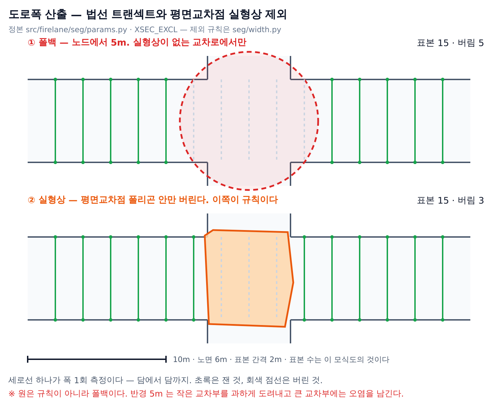
[그림 13] 도로폭 산출 — 법선 트랜섹트 샘플링과 평면교차점 실형상 제외
□ 인도 포함 문제에 대한 판단
수치지도 도로경계면은 포장면 기준이므로 담장 안쪽은 포함되지 않는다. 동명동 도로 대부분은 인도가 물리적으로 존재할 수 없을 정도로 좁고, 인도가 존재할 수 있는 5~8m 구간에서는 인도 2m를 잘못 포함하더라도 잔여 폭이 통과선을 넘으므로 판정이 뒤집히지 않는다. 따라서 인도 분리 처리는 수행하지 않는다.
4. 등급 판정 상세 설계
□ 판정 4종 분류
| 판정 | 조건 (width_min_m) | 처리 |
|---|---|---|
| clear | 최소 폭 ≥ 7.0 m | 상시 GREEN. 영상 판정 및 호모그래피 불필요 |
| needs_cv | 최소 폭 3.0 ~ 7.0 m | 영상 판정 대상. CCTV 유무에 따라 YELLOW / GRAY로 2차 분류 |
| blocked | 최대 폭 < 3.0 m | 상시 RED. 경로탐색에서 간선 자체를 배제 |
blocked 하한 3.0m 는 소방청 진입불가 기준(폭 2m 이하)에 차량 전폭 2.5m + 미러·조향 여유 0.5m 를 더한 값이라 외부 방어가 가능하다. clear 하한 7.0m 는 통과 하한 3.0m 에 양쪽 주차 2 x 2.0m 를 더한 값이며, 양방 주차가 상시인 골목에서 한쪽만 가정하면 판정이 낙관 쪽으로 기운다.
□ 4색 상태 체계
초기 설계는 6색이었으나 4색으로 축소했다. 색이 많으면 시각화가 힘을 잃는다는 것이 이유다. 관제요원은 지도를 읽는 것이 아니라 한눈에 판단해야 하며, 색의 수가 늘면 범례를 다시 확인해야 하는 순간이 생긴다.
| 색 | 의미 | 확정 조건 | 확정 시점 |
|---|---|---|---|
| GREEN | 통행 가능 | clear 또는 영상 판정 유효폭 ≥ 판정 통과선 | 정적 / 실시간 |
| YELLOW | 확인 필요 | needs_cv + CCTV 있음, 판정 대기 또는 경계값 | 정적 |
| RED | 통행 불가 | blocked 또는 영상 판정 유효폭 < 판정 통과선 | 정적 / 실시간 |
| GRAY | 미측정 | needs_cv + CCTV 없음 / GSD 유효 범위 밖 / 신선도 임계 이하 | 정적 / 실시간 |
[제거한 두 색과 그 이유]
| 제거 | 사유 |
|---|---|
| BLUE (판정 불필요) | 관제요원 입장에서 '원래 넓어서 통과'와 '지금 확인해보니 통과'는 취해야 할 행동이 동일하다. 화면에서 통과 가능 구간이 두 종류로 보일 이유가 없다. GREEN에 흡수하되 verdict 값(clear)은 유지해 영상 판정 대상에서 제외하는 필터로만 사용한다. |
| ORANGE (현재 점유로 불가) | 원인이 구조적이든 일시적이든 그 순간 못 지나가는 것은 같다. 색을 나누면 판독이 느려지고 실익이 없다. 다만 원인 구분 자체는 진입곤란지역 관리 자료로서 가치가 있으므로 blocked_reason 컬럼으로 남기고 상세 패널에서 노출한다. |
회색을 별도 색으로 유지하는 것이 이 체계의 핵심이다. '확인 안 됨'과 '통과 가능'을 같은 색으로 칠하면 시스템이 관측하지 못한 구간을 안전하다고 말하는 셈이 된다. 색을 줄이는 과정에서도 GRAY만은 병합하지 않는다.
- 5번째 색을 추가하지 않는다. 애매한 경우는 confidence로 표현하고 오류 비대칭 원칙에 따라 RED로 떨어뜨린다.
- 영상 판정 연동 이전에는 실시간 GREEN·RED가 0건이고 needs_cv + 커버 구간이 전부 잠정 YELLOW로 유지된다. 이는 설계된 동작이다.
- 영상 판정을 붙여도 골목의 65%에는 적용할 수 없다. CCTV 유효범위 25m 안에 드는 구간이 451 / 1,281(35.2%)이고, CCTV 최단거리 중앙값은 38.5m, 최대 212m다. 영상판정 불가는 400구간 · 17,181m 이며 전체 연장의 29%에 해당한다. 알고리즘의 한계가 아니라 인프라의 한계다.
- 완화 요소 — 영상판정 불가 구간이 담당하는 소방 통행량은 18%다. 주요 동선에는 대체로 CCTV가 있다. 그럼에도 이 사실을 감추지 않고 GRAY로 명시하는 것이 이 시스템의 설계 원칙이다.
- GRAY 400구간의 사유는 다섯 가지이며 폭 산출 불가는 0건이다. 넷은 카메라가 없어 못 보는 자리이고, 하나는 두 원천이 반대로 말하는 자리다. no_cctv_band 183(3~7m 대역, 주정차로 갈리는데 CCTV 25m 밖) / no_cctv_thin 142(노면 3m 미만이나 도로대장폭은 3m 이상 — 근거가 하나뿐) / no_cctv_narrow 63(노면·도로대장 모두 3m 미만이나 벽 사이는 여유) / no_cctv_single 11(7m 이상이나 표본 부족으로 통과 확정 보류) / ledger_disputes 1(노면 실측은 통과인데 도로대장 명목폭이 반박한다 — 카메라와 무관하다).
- 사유는 회색의 하위 구분이지 다섯 번째 색이 아니다. 범례에 별도 줄로 올리면 색이 5종으로 보이고 합계도 안 맞아 보인다. 하위 구분은 툴팁과 상세 패널에 넣는다.
- 상세 패널에는 색과 함께 blocked_reason(structural | occupancy), 유효 통행폭, 판정 시각, 신선도, 신뢰도를 표시한다. 색은 판단을 빠르게 하기 위한 것이고 근거는 패널에서 확인한다.
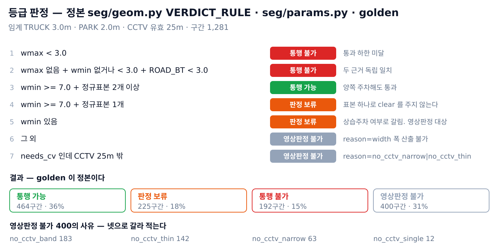
[그림 14] 등급 판정 플로우차트 — 판정 4종 분류에서 4색 상태 확정까지
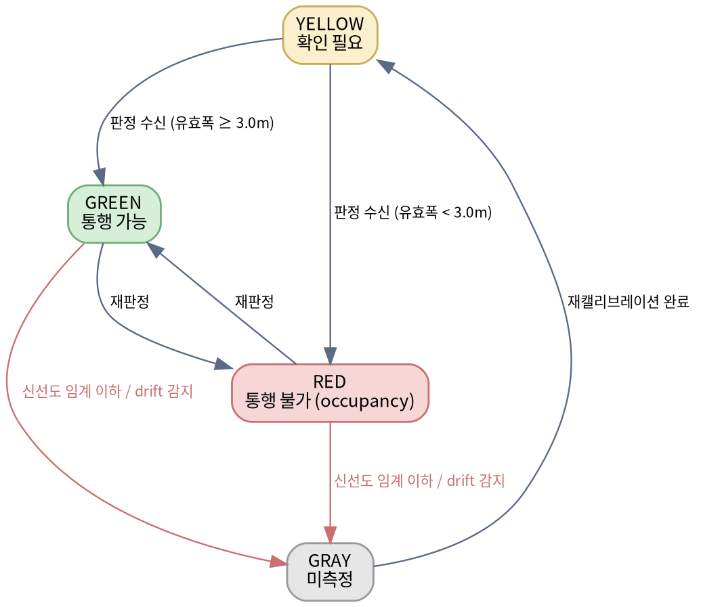
[그림 15] 상태 전이도 — 신선도 감쇠 및 drift 감지 시 GRAY 강등
□ 오류 비대칭과 안전 마진
| 오류 유형 | 결과 | 비용 |
|---|---|---|
| 미탐 (막혔는데 통과 가능 판정) | 소방차가 골목에 진입한 뒤 갇힌다 | 치명적 |
| 오탐 (통과 가능한데 막힘 판정) | 불필요하게 우회한다 | 경미 |
판정 통과선 = 펌프차 차체폭 + 미러 돌출분(양측) + 주행 여유
| 항목 | 잠정값 | 확정 경로 |
|---|---|---|
| 펌프차 차체폭 | 2.5 m | 소방청 소방차량 제작규격 / 제조사 카탈로그. 국내 소방차 대부분 폭 3m 이하 |
| 미러 돌출분 (양측 합) | 0.2 m | 실차 실측 또는 제원표. 접힌 상태·펼친 상태를 구분해 기록 |
| 주행 여유 | 0.3 m | 소방서 정식 인터뷰 — 현장 최소 여유공간 기준 |
| 합계 (판정 통과선) | 3.0 m | 세 값 확정 후 재산출 |
두 오류의 비용 차이가 100배 수준이므로 임계값을 대칭으로 둘 수 없다. 이는 발표 방어 논리로도 가장 강력하다 — "우리는 틀릴 수 있다. 그래서 틀리는 방향을 설계했다."
각 항목을 분해해 명시하는 이유는, 마진을 하나의 뭉뚱그린 숫자로 두면 무엇이 검증되었고 무엇이 추정인지 구분되지 않기 때문이다. 전폭은 KFS-1-0073-2025-00 §3.3 으로 확정했고, 축거·최소회전반경은 공식 규격에 없어 추정으로 남는다. 확정 경로가 각각 다르다. 산출된 3.0m는 회전 기준의 직진 유효 폭 3m와도 일치한다.
★ 이 마진은 MVP 실험 단계의 값이다. 축거·최소회전반경이 미확정이고 폭 실측이 0건인 상태에서 정한 것이므로 의도적으로 여유를 두었으며, 현장 진술(여유 8cm에도 통과를 시도한다)과는 간극이 있다. D-25 실측과 D-30 인터뷰로 값이 확정되면 마진은 좁아지는 방향으로 재산출된다. 지금 값을 최종 운영 기준으로 읽지 않는다.
□ CCTV 커버리지 판정
1차: 주소 텍스트 매칭 — CCTV 소재지 도로명주소에서 도로명을 추출해 세그먼트의 road_name과 문자열 비교
2차: 좌표 버퍼 폴백 — 1차 실패 시에만 적용
주소 매칭을 1차로 두는 이유는 CCTV 좌표가 도로 중심선과 8~14m 어긋나기 때문이다. 카메라는 인도 폴대에 설치되고 좌표는 주소 기반 지오코딩으로 생성되므로 태생적 오차이며, 버퍼 반경을 키워 해결하려 하면 인접 도로가 함께 걸린다. 폴백 버퍼 반경 25m 는 미확인 잠정값이다. 이 값 하나가 243구간의 판정을 가르므로 현장 답사로 검증한 뒤 확정한다. 다만 25m는 커버 상한이며 골목 깊숙한 곳은 식별되지 않으므로, 유효 측정 범위(GSD) 판정과 함께 사용해야 실제 관측 가능 구간이 나온다. CCTV 설치 간격은 미확인 상태이며 현장 답사로 확인한다.
5. 그래프 및 경로탐색 상세 설계
□ 노딩 — 기존 MVP가 동작하지 않은 원인
도로명주소 도로구간은 '도로명 하나 = 선 하나'로 그려져 있어 교차로에서 분할되어 있지 않다. 제봉로가 중앙로를 가로질러도 통짜 한 줄이다. 노딩 없이 networkx에 투입하면 다익스트라가 '경로 없음'을 반환하며, 이는 코드 결함이 아니라 입력 데이터의 위상 문제다.
| 소스 | 교차 노드 (3분기 이상) | 미분할 접점 |
|---|---|---|
| 도로명주소 도로구간 | 19 | 2,338 |
| 표준노드링크 | 452 | 7 |
노딩 결과 (2026-09-17): 도로구간 1,528 → 그래프 엣지 3,470 / 산출단위 1,281(판정 범위에 119안전센터 반경 300m · 필문대로289번길 중심선 보정 반영). 2026-08-14 첫 확정 때 끝점 투영 스냅 0.5m 로 연결요소 40개(최대 93.29%)를 6개(99.76%)로 복원했고, 노드 식별 반경 0.5m 접합으로 길이 0.0m 자기루프 224개를 제거했다. 이 224개 중 40개는 통행 가능(초록)으로 표출되고 있었다.
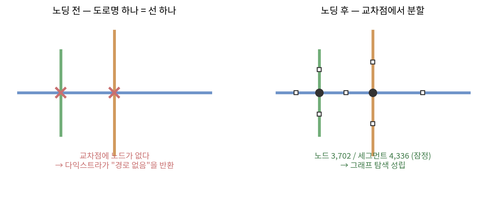
[그림 16] 노딩 전후 비교 — 교차점 분할이 없으면 경로탐색이 성립하지 않는다
□ 그래프 소스 선택
표준노드링크를 그래프 뼈대로 사용해서는 안 된다. 골목을 담지 않기 때문이다.
- 표준노드링크 1,334개 중 폭 2m 이하: 42개 (3%)
- 도로명주소 1,812개 중 폭 2m 이하: 699개 (39%)
| 역할 | 소스 |
|---|---|
| 그래프 뼈대 | 도로명주소 도로구간 (노딩 필수) |
| 폭 속성 | 수치지도 (주) / 실폭도로 (폴백) |
| 위상 정답지·간선망 대조 | 표준노드링크 LINK / NODE |
| 회전제한 | TURNINFO (동명동 87건) |
| 차로수·제한속도 | 표준노드링크 LANES / MAX_SPD |
표준노드링크의 REST_W(제한폭)는 전량 0이다. 미기입 필드이므로 폭 소스로 사용할 수 없다.
□ 가중치 설계
cost = length_m × (1 + α · 판정페널티 + β · 점유위험도)
곱셈형으로 확정한다. 덧셈형은 짧은 위험구간과 긴 안전구간의 비교를 왜곡한다.
| 판정 상태 | 페널티 |
|---|---|
| RED | ∞ (간선 배제) |
| YELLOW | 실측 기반 산출값 |
| GRAY | 0.5 (불확실성 반영) |
| GREEN | 0 |
점유 위험도는 단속밀도(건/100m)의 정규화값을 사용한다. 간선 길이는 반드시 지오메트리에서 재계산한다. ROAD_LT는 클리핑 이전 원본 도로의 전체 길이를 담고 있어 25m 조각에 4,200m가 기재되는 식이므로 가중치에 사용할 수 없다.
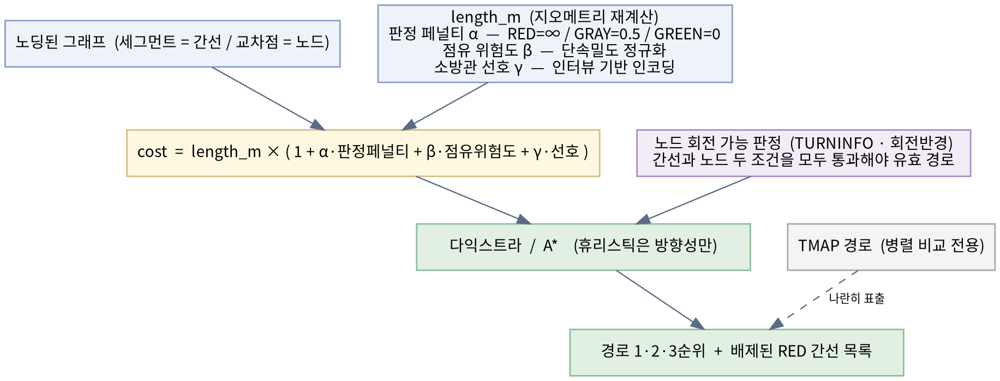
[그림 17] 경로탐색 가중치 구성 — 곱셈형 비용과 노드 회전 판정의 이중 조건
□ 알고리즘 — 다익스트라와 A* 병행
nx.dijkstra_path(G, s, t, weight="cost")
nx.astar_path(G, s, t, heuristic=haversine, weight="cost")
이 규모에서 성능 차이는 무의미하므로 A*를 쓰는 이유는 속도가 아니다. 휴리스틱이 사람의 경험을 파라미터로 반영할 수 있는 자리라는 점, 그리고 광주 전역 확장 시 탐색 공간이 커진다는 점이 이유다. 실행시간 비교는 그래프 한 장으로 제시한다.
[소방관 선호를 어디에 넣을 것인가] 인터뷰에서 확보한 선호 요소는 간선 가중치에 넣고, 휴리스틱에는 방향성만 남긴다. A*의 휴리스틱은 본래 '남은 비용의 추정치'이며 여기에 선호도를 직접 넣으면 허용성이 깨져 최적해가 보장되지 않는다. 선호도는 간선 가중치에, 방향성은 휴리스틱에 — 이 구분을 지키지 않으면 A*가 다익스트라와 다른 답을 내면서도 그 이유를 설명할 수 없게 된다.
주의: 휴리스틱이 실제 비용을 초과하면 최적해가 보장되지 않는다. cost에 페널티 곱셈이 들어가므로 직선거리를 그대로 사용할 수 없고 최소 배율로 나눈 값을 사용해야 한다. 이 처리를 누락하면 A*가 다익스트라와 다른 경로를 반환한다.
□ 회전 판정
폭 3m 골목이라도 직각 코너에서는 내륜차(off-tracking) 때문에 소방차가 회전하지 못한다. 따라서 간선과 노드에 서로 다른 조건을 적용한다.
설계 원칙: 간선 = 직진 폭 판정 / 노드 = 회전 가능 판정. 두 조건을 모두 통과해야 유효 경로다.
| 상황 | 기준 |
|---|---|
| 직진 | 유효 폭 3m 이상 |
| 회전 (코너) | 회전반경 차량 중심 10m + 곡선부 폭 4~6m |
| 진입 불가 | 폭 2m 이하 |
현재 회전 기준의 출처가 2차 자료에 머물러 있으므로 소방청 가이드라인 원문 확보를 병행한다. 전 구간 적용 시 골목 대부분이 탈락하여 그래프가 붕괴하므로, MVP에서는 시연 경로의 코너만 검증 대상으로 하고 "회전 제약을 모델에 포함했고 시연 경로는 검증했다. 전 구간 적용은 코너 실측 데이터 확보 후"로 범위를 명시한다.
□ 경로 후보 제시 방식
단일 최적 경로가 아니라 1·2·3순위를 함께 제시한다. 판단 주체는 관제요원이며 시스템은 근거를 제공하는 역할이므로, 선택지를 없애면 안 된다. 후보는 총 비용 상위 3개를 뽑되 경로 중복도가 높은 후보는 제외해 실질적으로 다른 선택지가 되도록 한다.
모든 경로가 막힌 경우에도 '경로 없음'으로 끝내지 않고 가장 덜 나쁜 경로와 그 근거(어느 구간이 왜 막혔는지, 유효폭이 얼마인지)를 제시한다. 최종 판단은 사람이 하되 근거는 반드시 주어야 한다.
□ 시나리오 자동 탐색
시연 시나리오를 손으로 고르지 않는다. 그래프에서 역산한다.
for (출발, 도착) in 조합:
d1 = 최단경로(제약 없음)
d2 = 최단경로(RED 제외)
if d2 / d1 > 1.5 and d2 < inf:
후보에 추가
'우리 시스템이 없었다면 소방차가 갇혔을 출발-도착 쌍'을 자동으로 찾는 절차다. 시나리오 선정 자체가 GIS 산출물이 되어 '임의로 고른 것 아니냐'는 질문을 차단한다. 출발점은 대인·지산 119안전센터를 사용하며, 선정 조건은 코너 통과 가능 / CCTV 커버 구간 포함 / 우회로 존재 세 가지다.
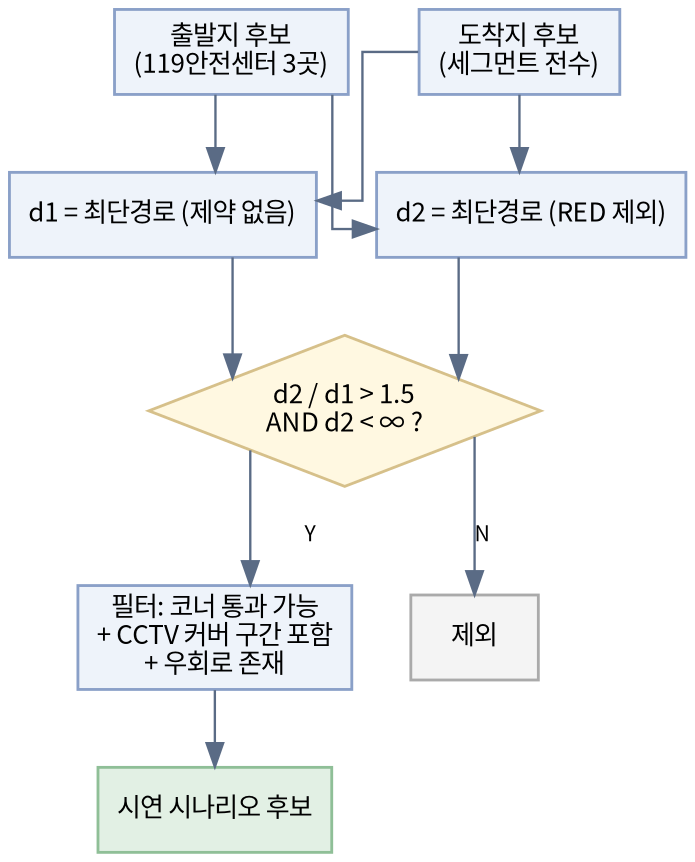
[그림 18] 시나리오 자동 탐색 로직 — 우회 비용비 기준 출발-도착 쌍 역산
[관할 소방 조직 — 경로 출발점]
| 기관 | 주소 | 좌표 (WGS84) | 동명동 기준 |
|---|---|---|---|
| 동부소방서 / 대인119안전센터 | 제봉로 210 | 126.914765, 35.154579 | 서쪽 약 1.0km |
| 지산119안전센터 | 밤실로30번길 16 | 126.938531, 35.149963 | 동쪽 약 1.2km |
| 학운119안전센터 | 남문로 692 | 126.928864, 35.132396 | 남쪽 |
출동은 소방서가 아니라 119안전센터에서 나간다. 동명동은 동·서 양방향 진입이 가능한 구조이며, 이는 우회 비용 비교 시나리오의 자연스러운 무대가 된다.
6. 비전 파이프라인 상세 설계
□ 캘리브레이션과 호모그래피의 구분
| 구분 | 캘리브레이션 | 호모그래피 |
|---|---|---|
| 대상 | 카메라 내부 (렌즈) | 카메라와 지면의 관계 |
| 산출물 | 초점거리, 주점, 왜곡계수 | 3×3 행렬 H |
| 방식 | 체커보드 20여 장 | 대응점 4쌍 이상 |
| 주기 | 카메라·렌즈당 1회 | 카메라를 옮길 때마다 |
순서: 렌즈 왜곡 보정 → 대응점 획득 → 호모그래피 산출. 왜곡을 먼저 펴지 않으면 H를 정확히 구해도 화면 가장자리에서 틀어진다. 대응점 4쌍은 최소조건이지 권장값이 아니며 실무에서는 6~8쌍 + RANSAC을 사용한다.
undistorted = cv2.undistort(img, mtx, dist)
H, mask = cv2.findHomography(src_px, dst_meter, cv2.RANSAC, 5.0)
pts_m = cv2.perspectiveTransform(pts_px.reshape(-1,1,2), H)
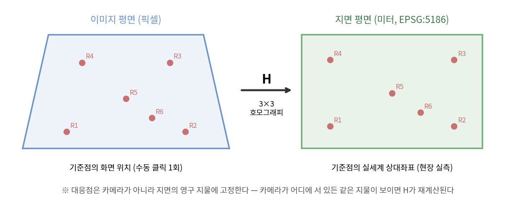
[그림 19] 호모그래피 개념도 — 기준점의 화면 좌표와 실세계 좌표 대응
□ 대응점을 지면에 고정하는 설계
본 프로젝트는 고정 CCTV가 아니라 삼각대로 CCTV를 모사한다. 따라서 카메라는 전혀 고정이 아니며, 카메라 위치·높이·각도를 재현하려는 시도를 포기한다.
| 시점 | 수행 내용 |
|---|---|
| 관측점당 1회 (영구) | 지면 영구 지물 4~6개의 실세계 상대좌표를 실측한다 |
| 매 세션 | 같은 지물의 이미지 좌표만 다시 획득하여 H를 재계산한다 |
| 1회차 세션 | 수동 클릭 + 지물 실측 + 기준 사진 확보 |
| 2회차 이후 | 1회차 기준 이미지와 특징점 매칭(ORB/SIFT + RANSAC)으로 자동 정합 |
[기준점 요구 조건] 반드시 노면 평면 위의 점이어야 한다(차 지붕·벽 중턱 불가). 화면 전체에 넓게 분산하되 사각형에 가깝게 배치하며, 3점 이상이 일직선이면 계산이 붕괴한다(degenerate). 4점은 최소값이고 실제로는 6~8점 + 최소제곱이 안정적이다. 한 점에 대해 실제 위치(미터)와 화면 위치(픽셀) 두 가지를 모두 알아야 한다.
[기준점 찍기는 자동화하지 않는다] 카메라 세팅용 기준점은 사람이 수동으로 찍고, 차량 위치만 자동 탐지한다. 카메라 한 대당 1회 작업이므로 자동화가 필요 없는 작업이다. 이는 초기에 프로젝트 최대 리스크로 지목되었던 '점 찍는 것 자체가 자동이 안 된다'는 문제의 결론이며, 자동화 대상이 아니었으므로 리스크에서 제외된다.
[마커] 촬영 시에는 청테이프를 기준점 마커로 사용한다. 골목에서 즉시 사용 가능하고 식별이 쉽다. 단 청테이프를 붙인 위치의 실제 좌표를 반드시 확보해야 하며, 좌표 없는 마커는 의미가 없다. 실 CCTV로 전환하면 마커를 놓을 수 없으므로 고정 특징물로 대체한다. 따라서 촬영 시점에 '이 골목에서 마커 없이 쓸 수 있는 기준점은 무엇인가'를 함께 기록한다.
[설정 파일] 캘리브레이션 정보는 골목(카메라) 단위 설정 파일로 관리한다. 카메라 한 대마다 채워야 할 정보가 다수 존재하기 때문이다 — 내부 파라미터(초점거리·주점·왜곡계수), 설치 높이 h, 기준점 좌표쌍, GSD 임계, drift 대조용 고정 특징점.
기준 지물 후보: 맨홀 뚜껑 모서리, 보도블록 줄눈 교차점, 전주 밑동, 연석 이음매, 배수구 격자, 건물 모서리와 지면의 접점, 노면 표시. 카메라가 어디에 서 있든 같은 지면 점들이 프레임에 보이기만 하면 H가 매번 정확히 산출되며, '매번 동일 위치에서 촬영해야 한다'는 제약이 통째로 사라진다. 실제 CCTV 배포에서도 카메라 흔들림·재설치 시 자동 복구 수단으로 그대로 쓰인다.
[폐기된 대안] 지적도·도로폭 등 기준 데이터를 이용한 대응점 자동화는 원리적으로 불가능하다. 폭 값을 사용하려면 화면에서 어느 픽셀이 좌·우 연석인지 먼저 지정해야 하는데 그것이 바로 제거하려던 수동 클릭이며(순환논법), 폭은 스칼라 1개(점 2개)인 반면 H는 자유도 8로 점 4개를 요구하고(정보량 부족), 지적선은 소유권 경계라 담장 안팎 어디일 수 있어 사진에서 특정할 수 없다. 대부분의 '기준' 데이터는 실좌표(dst)만 제공하고 어느 픽셀인지(src)는 제공하지 않는다.
□ 오차 구조
초점거리 f(px), 카메라 높이 h, 대상 거리 d일 때 1픽셀 오차의 실제 크기는 다음과 같다.
깊이 방향: d² / (f · h) — 거리의 제곱에 비례해 급격히 악화
가로 방향: d / f — 거리에 비례해 완만하게 증가
| 대상 거리 (f=1000px, h=1.5m) | 깊이 1px 오차 | 가로 1px 오차 |
|---|---|---|
| 10 m | 0.067 m | 0.010 m |
| 20 m | 0.27 m | 0.020 m |
| 30 m | 0.60 m | 0.030 m |
따라서 골목을 따라 정면으로 촬영한다. 정면이면 도로 폭이 가로 방향이 되어 15m 앞 차량을 5px 틀려도 오차가 0.08m에 그친다. 옆에서 가로지르며 촬영하면 같은 5px이 1m 이상 벌어진다. 분모에 h가 있으므로 카메라를 높일수록 깊이 오차가 감소한다.
| 오차 요인 | 영향 | 대응 |
|---|---|---|
| 대응점 실측 오차 | 최대 | 레이저 거리계 사용. 줄자 U자 처짐은 5m 구간에서 수십 cm 오차 |
| 대응점 배치 | 큼 | 화면에 넓게 분산. 한 줄 배열 금지 |
| 지면 평탄 가정 위반 | 큼 | 경사 골목 회피. 관측점 선정 단계에서 반영 |
| 렌즈 왜곡 미보정 | 중 | 체커보드 캘리브레이션 선행 |
| 카메라 높이 오차 | 중 | 삼각대 고정 시 설정값이므로 영향 작음 |
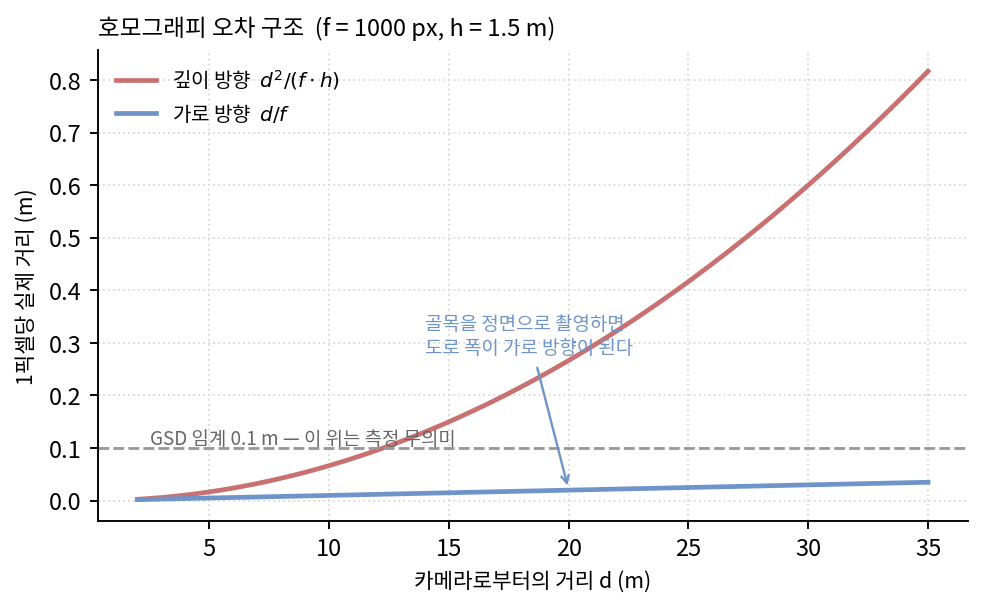
[그림 20] 거리에 따른 픽셀당 실제 거리 — 깊이 방향은 거리의 제곱으로 악화된다
□ 촬영 체크리스트
| # | 항목 | 이유 |
|---|---|---|
| 1 | 줌 금지, 1배 고정 | 초점거리가 변하면 캘리브레이션이 무효가 된다 |
| 2 | 광각(0.5배) 금지 | 왜곡이 커서 화면 가장자리가 크게 틀어진다 |
| 3 | 렌즈 왜곡 보정 선행 | 체커보드 20여 장, 카메라당 1회 |
| 4 | 대응점을 넓게 분산 | 몰리거나 일직선이면 H가 불안정해진다 |
| 5 | 4점 초과 + RANSAC | 이상치 자동 제거 |
| 6 | 근경~중경에서 측정 | 원경은 d² 항으로 오차가 폭증한다 |
| 7 | 삼각대 필수 | 조금만 움직여도 H가 무효가 된다 |
| 8 | 평평한 구간 선택 | 호모그래피는 평면 가정에 기반한다 |
| 9 | 줄자를 지면에 펴놓고 함께 촬영 | 사후 검증용 정답지 확보 |
| 10 | 사진 메신저 전송 금지 | EXIF 소실·리사이즈로 초점거리 정보가 사라진다 |
□ 유효 통행폭 산출
뺄셈 방식(GIS 도로폭 − 감지 차폭)은 채택하지 않는다. GIS 서류값과 차폭 감지 두 군데에서 오차가 이중 누적되기 때문이다. 대신 호모그래피로 변환된 좌표계 위에서 세그멘테이션 결과를 직접 측정한다.
- YOLO11-seg(yolo11n-seg.pt), COCO 클래스 {2:car, 3:motorcycle, 5:bus, 7:truck}
- 세그멘테이션 필수. bbox는 비스듬히 주차된 차량에서 폭을 크게 과대추정한다
- 바닥 접지선 기준 — 마스크 최하단 행의 좌·우 끝을 사용한다. 타이어 접지점에 가장 가깝다
- 골목을 1m 간격으로 잘라 각 단면의 폭을 구하고, 각 지점에서 벽과 차 사이 빈 구간을 픽셀로 세어 호모그래피로 미터 변환한다. 최솟값이 그 골목의 통행 폭이다
□ 미러 돌출분 보정 — 이 프로젝트에서 가장 위험한 오류
호모그래피로 얻는 값은 타이어 접지선의 지면 좌표다. 그런데 차체와 사이드미러는 타이어보다 바깥으로 튀어나와 있다. 접지선 기준으로만 재면 실제 통과 폭보다 넓게 나오고, 이는 정확히 '지나갈 수 있다'고 잘못 판정하는 방향이다. 미탐은 이 프로젝트에서 유일하게 허용되지 않는 오류이므로 보정 없이 접지선 값을 사용해서는 안 된다.
| 방식 | 내용 | 채택 여부 |
|---|---|---|
| A | 접지선을 측정하고 차종별 미러 돌출분을 상수로 가산한다 | 채택 — 구현 비용이 없고, 미러 돌출분은 차종별로 거의 고정이라 값의 근거를 제시할 수 있다 |
| B | 판정 높이 z 평면의 호모그래피를 지면 호모그래피에서 (h−z)/h 비율로 근사 유도해 사용한다 | 미채택 — 카메라 설치 높이 h를 알아야 하는데, 실 CCTV로 전환하면 h를 확보할 수 없는 경우가 많아 방식 자체가 이식되지 않는다 |
다만 설치 높이 h는 계속 기록한다. 호모그래피 검산, 재캘리브레이션 시 복구 근거, 향후 B 방식 검토의 입력이 되기 때문이다.
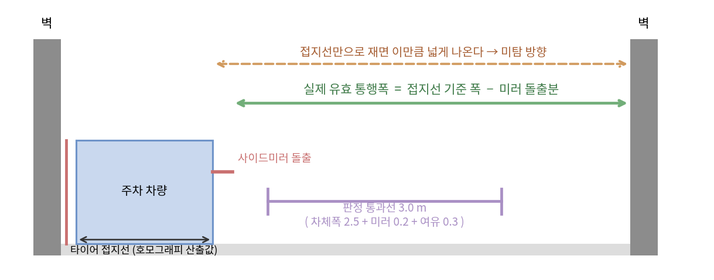
[그림 21] 유효 통행폭 단면 개념도 — 접지선 기준값과 미러 돌출분 보정
□ 유효 측정 범위 (GSD)
픽셀당 실제 거리는 카메라에서 멀어질수록 급격히 커지며, 어느 지점부터는 1픽셀이 10cm를 넘어 측정이 무의미해진다. 이 임계를 정의해야 '입구~25m 구간 확인됨, 이후 미확인'과 같은 정직한 출력이 가능하다. 정의하지 않으면 시스템이 보지도 못한 구간을 통과 가능이라고 말하게 된다. 미확인 구간은 GREEN이 아니라 GRAY로 출력한다.
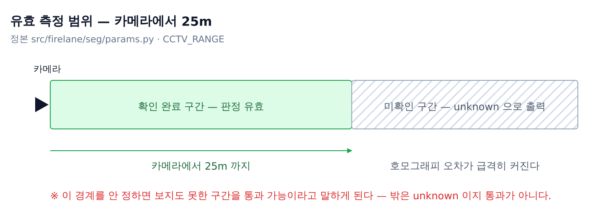
[그림 22] 유효 측정 범위 — 임계를 넘는 구간은 GREEN이 아니라 GRAY로 출력한다
□ 정합 이탈(drift) 감지
카메라가 흔들리거나 재설치되면 호모그래피는 조용히 무효가 된다. 틀린 줄 모르고 계속 숫자를 뱉는 것이 이 시스템에서 가장 위험한 실패 양상이다. 고정 특징점의 이미지 좌표를 설정 파일에 저장해두고 매 갱신 시 대조하여, 어긋나면 판정을 내지 않고 재캘리브레이션 플래그를 발생시킨다.
□ 주정차 판별 — 시간축 기반
가상 중앙선 기반 판별은 사용하지 않는다. 골목에는 중앙선 개념이 없어 나쁜 휴리스틱이다. 판별 기준은 연속 프레임에서의 정지 여부다.
관측점에서 삼각대 고정 → 30초~1분 동영상 1개 → 프레임 추출 + 타임스탬프 → mock 서버가 순서대로 반환
주행 차량은 5초면 화면을 벗어나므로 30초면 충분하다. 이 요구가 아키텍처를 강제한다 — mock 서버는 단일 이미지가 아니라 프레임 시퀀스를 반환해야 한다. '24시간 연속 관측 불가'와 '시퀀스 확보 불가'는 다른 문제이며, 전자만 사실이다. 보조 신호로 도로 축과의 각도(주차는 대개 평행), 연석과의 거리, 제동등 상태를 사용한다.
□ 프라이버시 파이프라인
원본이 서버로 넘어가는 순간 개인정보를 '수집'한 것이 된다. 엣지에서 번호판·얼굴을 마스킹한 뒤 전송하면 서버는 애초에 개인정보를 보유하지 않는다. 이 구조 하나로 개인정보 관련 질의 전반을 방어할 수 있으며, 없으면 프로젝트가 법적으로 성립하지 않으므로 딥러닝 투입 지점 중 최우선 순위에 둔다.
| 순위 | 항목 | 선정 근거 |
|---|---|---|
| 1 | 프라이버시 파이프라인 (번호판·얼굴 마스킹) | 없으면 프로젝트가 법적으로 성립하지 않는다 |
| 2 | 주정차 vs 주행 판별 (시간축) | 아키텍처가 요구하는 기능이다 |
| 3 | 야간 강건성 (저조도 향상 / 도메인 적응) | 실제 문제에서 출발한 과제다 |
| 4 | 소방관 선호 경로 학습 | 인터뷰 성공이 선행 조건이라 리스크가 크다 |
□ CCTV 실시간 스트림에 대한 판단
| 사유 | 내용 |
|---|---|
| 데이터 | 공공데이터 CCTV는 메타데이터만 제공하며 영상은 포함되지 않는다 |
| 법률 | 개인정보보호법 제25조 — 정당한 권한자만 열람 가능하며 무단 시청은 처벌 대상이다 |
| ITS API | 실시간 영상 API는 존재하나 고속도로·국도용이며 도심 골목은 커버하지 않는다 |
따라서 RESTful 연동 인터페이스는 정식 탑재하되 시연은 사전 촬영 프레임을 순차 반환하는 mock GET 서버로 수행한다. '권한이 부여되면 그대로 붙는' 구조라는 점이 발표 포인트가 된다.
7. 실측 설계
□ 실측 프로토콜
GPS를 기록하지 않은 실측은 대조에 사용할 수 없다. 실제로 세그먼트 중심선과 최대 23m 어긋난 사례가 있었고 그날 산출된 소스별 오차 수치는 전부 폐기되었다. 모든 실측은 다음 항목을 필수로 기록한다.
1. seg_uid + 관측점 ID
2. 기준 지물 서술 — 예: 서쪽 끝에서 세 번째 맨홀 중심 (가장 중요한 입력)
3. GPS 좌표 (보조. 지물 서술이 우선한다)
4. 기준 사진 (기준 지물이 프레임에 보이도록 촬영)
5. 측정 종류: 담~담 / 연석~연석 / 통행폭 / 코너폭
6. 시각 · 날씨 · 조도
[GPS로는 지점을 특정할 수 없다] 도심 골목의 휴대폰 GPS 오차는 5~15m이고 골목 폭은 3m다. GPS로 알 수 있는 것은 '어느 세그먼트 위인가'뿐이며 '세그먼트 내 어느 지점인가'는 알 수 없다. 지점 특정의 해법은 지물 기준이다. 기준 지물을 기록하고 그것이 프레임에 보이도록 촬영하면 재방문 시 재현된다.
[측정 대상 접촉 규칙] 반사 대상이 없을 때는 A4 클립보드나 흰 폼보드를 팀원이 들고 선다. 차량 간 거리는 차체가 아니라 지면 마킹 간 거리를 측정한다. 차체는 곡면이라 레이저가 튄다.
[안전] 답사는 오전 9~11시로 고정한다. 8월 광주의 오후 아스팔트 답사는 실제로 위험하다. 야간 답사는 별도 일정으로 편성하고, 도로 한복판 실측은 2인 1조로 1명이 차량을 감시한다. 이 항목은 일정 압박이 있어도 타협 대상이 아니다.
□ 실측 장비 — 줄자와 레이저 거리계
1차 실측(2026-08-06)은 5.5m 줄자로 수행했고, 현장에서 세 가지 문제가 확인됐다. 구간이 길어지면 줄자 중앙이 U자로 처지고, 지면과 평행하게 유지하기 어려우며, 5.5m로는 깊이 방향 기준점 배치를 커버하지 못한다.
[처짐 오차는 실제로 얼마인가 — 정량 확인]
체감상 큰 문제로 보였으나 수평거리 오차로 환산하면 그렇지 않다. 처짐량 s, 수평거리 d일 때 줄자가 읽는 곡선 길이와 실제 수평거리의 차는 근사적으로 8s²/3d이다.
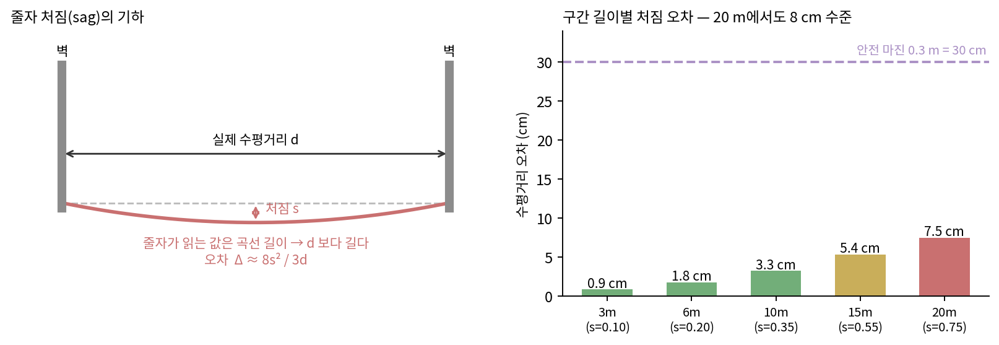
[그림 23] 줄자 처짐 기하와 구간 길이별 수평거리 오차 — 20m 구간에서도 8cm 수준
20m 구간에서 75cm를 처지게 두어도 수평거리 오차는 약 7.5cm다. 안전 마진 0.3m와 폭 허용 오차 ±0.5m를 기준으로 보면 판정을 뒤집지 못하는 크기다. 양 끝 높이차 0.5m에 의한 경사 오차도 15m 구간에서 약 0.8cm에 그친다.
따라서 이전 문서에 기재됐던 '5m 구간에서 처짐 오차 수십 cm'는 과대 기술이며, 인용하지 않는다. 줄자로도 정확도 요구사항(NFR-ACC-002)은 충족된다.
[그렇다면 레이저 거리계가 필요한 이유는 정확도가 아니다]
| 사유 | 내용 |
|---|---|
| 측정 가능 길이 | 현재 보유한 5.5m 줄자로는 6m 이상 골목의 벽~벽 거리와, 깊이 방향 10~15m에 배치할 기준점 간 거리를 한 번에 잴 수 없다. 이어붙여 재면 오차가 누적되고 기록이 복잡해진다. |
| 작업 인원 | 줄자는 양 끝을 잡을 2인이 필요하다. 레이저는 1인이 측정하고 나머지가 촬영·기록에 투입될 수 있어, 20곳 촬영 계획에서 답사 회차가 줄어든다. |
| 도로 위 안전 | 차량이 통행하는 골목에 줄자를 가로로 펼치는 행위 자체가 위험하다. 레이저는 도로를 점유하지 않는다. 안전은 타협 대상이 아니다(§7-4). |
| 재현성 | 줄자는 매번 장력과 끝단 접촉 위치가 달라져 같은 지점을 다시 재도 값이 흔들린다. 기준점 실측은 관측점당 1회 영구 기록이므로 재현성이 정확도보다 중요하다. |
| 경사 보정 | 경사 센서가 있는 기종은 기기가 기울어져도 수평 거리를 계산해준다. '지면과 평행하게 대기 어렵다'는 문제를 장비 차원에서 해소한다. |
[기종 검토]
아래는 2026년 8월 기준 국내 유통가를 조사한 결과다. 실제 구매 시점에 재확인이 필요하다.
| 기종 | 측정 범위 | 정밀도 | 가격대 | 비고 |
|---|---|---|---|---|
| 중국산 보급형 (40m급) | ~40 m | ±2 mm (표기) | 2만 원 내외 | 경사 센서 없음. 표기 정밀도는 실제 재현성과 다를 수 있어 구매 후 줄자 대조 검증 필요 |
| 보쉬 GLM 30-23 / GLM 40 | ~30 / 40 m | ±2 mm 급 | 9만 원대 | 기본기 안정. 경사 센서는 미탑재 |
| 보쉬 GLM 50-23 G (권장) | 0.05 ~ 50 m | ±1.5 mm | 15만 원 전후 | 360° 경사 센서 탑재 — 수평거리 자동 보정. 그린 레이저라 주간 옥외 가시성 우수. 170 g |
| 라이카 DISTO D1 | ~40 m | ±2 mm | 15만 원 전후 | 블루투스 연동. 측정값 자동 기록 가능 |
본 프로젝트의 실측 대상은 골목 폭 3~8m와 기준점 간 거리 1~15m이므로 30~50m급이면 충분하다. 100m 이상 고급기나 무타깃 측량기는 과사양이다. 주간 옥외에서 흰 벽면을 조준할 때 적색 레이저는 점이 잘 보이지 않으므로 그린 레이저가 유리하며, 조준 보조로 흰 폼보드를 반사 타깃으로 사용한다.
[지원금 미승인 시 대응 — 줄자 구매는 차선이 아니다]
장비비가 지원되지 않을 경우 20m 줄자를 구매하는 안이 검토됐으나 권장하지 않는다. 위에서 확인했듯 줄자의 한계는 정확도가 아니라 인원·안전·재현성이며, 20m 줄자를 사도 그 세 가지는 그대로 남는다. 반면 보급형 레이저 거리계는 2만 원대이므로 5인이 4천 원씩 부담하면 자비로도 확보 가능한 금액이다. 이는 예산 문제라기보다 우선순위 문제로 취급한다.
| 우선순위 | 조건 | 조치 |
|---|---|---|
| 1안 | 지원금 승인 | 경사 센서 탑재 그린 레이저(15만 원대) 1대 + 기존 5.5m 줄자 유지. 검증용 대조 측정에 줄자를 사용 |
| 2안 | 지원금 미승인 | 보급형 레이저 거리계(2만 원대) 1대를 팀 자비로 확보. 구매 직후 5.5m 줄자와 10회 대조하여 계통 오차를 측정하고 보정값을 기록 |
| 3안 | 레이저 확보 불가 | 10~15m 스틸 줄자 사용. 유리섬유 줄자는 장력에 따라 늘어나므로 배제. 아래 운용 규칙을 강제 적용 |
[줄자만으로 진행할 경우의 운용 규칙]
• 줄자를 공중에 띄우지 않고 지면에 놓고 잰다. 처짐이 원천적으로 발생하지 않으며, 이것이 처짐 문제의 가장 단순한 해법이다.
• 양 끝을 벽에 대지 말고 벽면에서 일정 거리(예: 10cm)를 띄운 지면 마킹 간 거리를 재고, 벽까지의 잔여분은 별도로 더한다. 벽 하단은 걸레받이·화단으로 요철이 심해 끝단 접촉 위치가 매번 달라진다.
• 장력을 일정하게 유지하기 위해 항상 같은 사람이 같은 방식으로 당긴다. 절대 정확도보다 회차 간 재현성이 중요하다.
• 10m를 넘는 구간은 한 번에 재지 말고 5m 이하로 분할해 지면 마킹을 남기며 잰다. 분할 지점은 사진에 함께 기록한다.
• 2인 1조를 유지하고 1명은 반드시 차량을 감시한다. 도로 위 측정 시간을 최소화한다.
[기준점 실측은 긴 거리를 잴 필요가 없다]
호모그래피에 필요한 것은 기준점들의 절대 위치가 아니라 서로에 대한 상대좌표다. 따라서 관측점 원점에서 15m 떨어진 기준점까지의 거리를 직접 잴 필요가 없고, 인접한 마커 간 간격만 순차적으로 재어 이어붙이면 로컬 좌표계가 구성된다. 이 방식이면 5.5m 줄자로도 깊이 방향 기준점 배치가 가능하다.
단 오차가 누적되므로 두 가지를 병행한다. 첫째, 이어붙인 총 길이를 마지막에 한 번 직접 재어 누적 오차를 확인한다(레이저가 있으면 이 검산이 즉시 가능하다). 둘째, 기준점을 한 줄로 배열하지 않고 사각형에 가깝게 분산 배치해 누적 방향이 한쪽으로 쏠리지 않게 한다.
□ 관측점 데이터 구조
{
"obs_id": "OBS-001",
"seg_uid": "DM-192942-283921-YM7N",
"geom": [x, y],
"landmark_desc": "장동로 서쪽 끝에서 세 번째 맨홀",
"ref_points": [
{"id": "R1", "desc": "맨홀 북동 모서리", "local_xy": [0.0, 0.0]},
{"id": "R2", "desc": "보도블록 줄눈 교차", "local_xy": [2.4, 0.0]}
],
"ref_image": "obs001_ref_20260810.jpg",
"sessions": [
{"at": "2026-08-10T09:30", "video": "...", "H": [[...]], "illum": "day"},
{"at": "2026-08-10T19:40", "video": "...", "H": [[...]], "illum": "night"}
]
}
관측점을 GIS 1급 개체로 승격시키면 세션 간 H 재계산, 시간대별 통행폭 비교, 관측 커버리지 레이어(GRAY 구간 중 실제로 덮은 범위)가 따라온다. CCTV 좌표를 관측점으로 그대로 사용하지 않는다. 관측점은 시연 경로 위에서 선정해야 한다.
[답사 1회로 세 가지를 확보한다] 같은 관측점을 오전·오후·야간 3회 촬영하면 시간대별 통과 가능성 변화('14시 통과 가능 / 19시 불가'는 서비스 필요성 논거로 가장 강하다), 관측 신선도 모델의 근거 데이터, 야간 성능 데이터를 한 번에 얻는다.
□ 촬영 대상 골목 선정
20곳을 다음과 같이 배분한다. 4m 골목이 통과된다는 사실은 아무도 궁금해하지 않는다. 2.9m에서 시스템이 어떻게 동작하는가가 핵심이다.
| 유형 | 개수 | 역할 |
|---|---|---|
| 명백히 통과 가능 (4m 이상) | 5 | 정상 동작 확인 |
| 명백히 불가 (2m대 양측 주차) | 5 | 우회 추천 시연 |
| 경계선 (2.8~3.2m) | 6 | 판정 성능이 실제로 드러나는 구간 |
| 어려운 케이스 (야간·역광·곡선) | 4 | 한계 분석 |
이 중 주차 변동이 큰 4곳을 오전 10시 / 저녁 7시 / 밤 10시 세 차례 반복 촬영한다. 나머지 16곳은 1회 촬영한다.
| 시각 | 도로대장 폭 | 실측 유효폭 | 판정 |
|---|---|---|---|
| 오전 10시 | 4.0 m | 3.8 m | 통과 가능 |
| 저녁 7시 | 4.0 m | 2.9 m | 경계 |
| 밤 10시 | 4.0 m | 0.4 m | 진입 불가 |
도로대장은 4.0m로 고정인데 실제 판정은 세 번 모두 다르다. 이 표 하나로 '왜 기존 데이터로는 안 되는지'와 '왜 이 시스템이 필요한지'가 동시에 설명된다. 덤으로 오전 10시 촬영본은 빈 노면 baseline이 된다.
[골목마다 확보할 세 숫자]
| 값 | 출처 | 성격 |
|---|---|---|
| 서류상 폭 | 공공데이터 (수치지도·실폭도로) | 변하지 않음 |
| 실측 유효폭 | 레이저 거리계·줄자 (정답지) | 시간마다 변함 |
| 시스템 추정폭 | 영상 판정 결과 | 시간마다 변함 |
서류상 폭 대 실측 유효폭의 차이가 프로젝트의 명분이고, 실측 유효폭 대 시스템 추정폭의 차이가 성능 증명이다. 검증용(줄자 실측값 포함)과 시연용(이해가 되는가 중심) 데이터는 같은 골목에서 동시에 확보한다. 같은 골목을 두 번 갈 이유가 없다.
8. 서빙 API 명세
프론트엔드와 QGIS 모두 serving 스키마만 조회한다. 판정 로직은 백엔드에 하나만 두고 소비자는 여럿이 된다. 클라이언트에서 판정을 재계산하게 해서는 안 된다.
| 메서드 | 엔드포인트 | 설명 |
|---|---|---|
| GET | /api/segments | bbox·verdict 필터를 지원하는 세그먼트 GeoJSON 조회. 정적 속성 + 현재 status 포함 |
| GET | /api/segments/{seg_uid} | 단일 세그먼트 상세 — 폭, 폭 소스, verdict, CCTV 커버리지, 단속밀도, 판정 근거 |
| GET | /api/status | 동적 계층 폴링. 마지막 조회 이후 변경된 seg_uid와 status만 반환 |
| POST | /api/route | 출발·도착 좌표와 algorithm(dijkstra|astar|baseline)을 입력받아 경로 지오메트리, 총 거리, 경유 정보, 배제 간선을 반환 |
| GET | /api/route/compare | 동일 출발-도착 쌍에 대한 Fire-Lane 경로와 TMAP 경로를 함께 반환 |
| POST | /api/vision/result | 비전 모듈의 판정 결과 수신 (계약 스키마). segment_status 갱신을 트리거 |
| GET | /api/mock/frames/{obs_id} | mock 스트림 — 관측점별 프레임 시퀀스를 타임스탬프 순으로 반환 |
| GET | /api/observations | 관측점 목록 및 커버리지 레이어 조회 |
| POST | /api/observations | 실측 보조 웹에서 관측점 등록 (기준 지물 서술 필수) |
| GET | /api/scenarios | 자동 탐색된 시연 시나리오 후보 목록 (우회 비용비 포함) |
9. 화면 설계
| 화면 | 주요 구성 | 동작 |
|---|---|---|
| 상황실 지도 대시보드 | 정사영상 배경 타일, 4색 세그먼트 레이어, 범례, 레이어 토글(CCTV·소방서·관측 커버리지), 최종 갱신 시각 | 폴링으로 status를 갱신하고 색상을 실시간 반영한다. 범례는 네 색과 그 의미만 표시하며 부가 구분은 넣지 않는다. |
| 세그먼트 상세 패널 | 도로명, width_min_m / width_max_m, 폭 소스, verdict, 현재 상태, 유효 통행폭, 관측 시각 및 경과 시간, 신뢰도, CCTV 커버리지, 단속밀도 | 세그먼트 클릭 시 우측 패널로 슬라이드 인. 판정 근거를 색상과 함께 반드시 노출한다. |
| 경로 비교 뷰 | 출발지 선택(119안전센터 3곳), 도착지 지정, Fire-Lane 경로와 TMAP 경로 중첩 표출, 거리·예상시간·통과 불가 구간 포함 여부 비교표, 경유 소화전·CCTV 목록 | 두 경로를 서로 다른 스타일로 표시하고 차이가 발생한 구간을 강조한다. 배제된 RED 간선을 별도 표시한다. |
| 시나리오 · 평가 화면 | 자동 탐색된 시나리오 후보 목록, 우회 비용비, 베이스라인 대비 평가 지표, 임계값 민감도 그래프 | 시나리오 선택 시 해당 경로를 지도에 로드한다. 평가 결과를 발표용으로 내보낼 수 있다. |
| 선두 차량용 태블릿 화면 | 진입 예정 골목의 현재 판정 상태, 유효 통행폭, 확인 완료 구간과 미확인 구간 구분, 마지막 갱신 시각 | 소방차는 여러 대가 함께 출동하며 선두 차량이 먼저 길을 파악해 본 차량의 진입 가능 여부를 판단한다. 따라서 사용자는 관제요원만이 아니다. 주행 중 확인해야 하므로 정보를 최소화하고 색과 숫자만 크게 표시한다. |
| 실측 보조 모바일 웹 | 현재 위치, 최근접 세그먼트 자동 판별, 관측점 등록 폼(기준 지물 서술 필수), 사진 첨부, 측정값 입력, JSON 내보내기 | 기존 지도 HTML에 얹는 형태로 구현하며 네이티브 앱은 만들지 않는다. HTTPS 배포가 선행되어야 위치 API가 동작한다. |
□ 사용자 — 누가 이 화면을 보는가
화면 설계는 기능 목록이 아니라 사람에서 나온다. 팀이 작성한 페르소나 다섯 중 화면을 직접 보는 둘을 여기 든다. 아래 통증 번호가 각 화면 요구사항의 근거다.
[P1] 오지환 · 36세 소방교 · 119종합상황실 관제사 (상황실 4년, 현장 6년 · 펌프차 운전 포함)
목표 — 90초 안에 통행 가능한 경로를 고르고, 그 판단의 근거를 화면에 남긴다.
핵심 문제 — 골목의 지금 상태를 볼 방법이 없다. 근거 없는 통행 가능·불가 표시는 믿을 수 없다.
화면 조건 — 마우스 조작은 가능하나 근거를 확인할 시간은 10초 안쪽이다. 기존 지령 절차를 끊는 화면은 강제로 띄우면 안 된다.
P1-1 지도에 적힌 폭과 실제로 차가 지나갈 수 있는 폭이 다르다. 주차 차량은 아예 반영되지 않는다.
P1-2 CCTV가 없거나 화면이 오래돼 골목의 현재 상태를 확인하지 못한다.
P1-3 결론만 뜨면 도면으로 판정한 것인지 영상으로 확인한 것인지 구분되지 않는다.
P1-4 대체 경로 없이 한 개만 추천된다. 도착이 늦어지면 왜 그 길을 골랐는지 나중에 설명해야 한다.
[P2] 문재현 · 41세 소방장 · 대인119안전센터 중형펌프차 운전요원 (소방 13년 · 운전 8년)
목표 — 골목에 들어가기 전에 통과 여부를 알고, 막히면 곧바로 쓸 다른 길을 확보한다.
핵심 문제 — 달리는 중에 확인할 수 있는 정보가 없다. 판단이 전부 본인 경험이고 그 경험은 관할 구역에만 있다.
화면 조건 — 운전 중이라 화면을 3초 이상 볼 수 없고 손으로 조작할 수 없다. 색과 큰 숫자만 읽힌다. 도착한 뒤에 뜨는 정보는 쓸모가 없다.
P2-1 지도의 도로 폭과 실제 통행 폭이 달라, 골목 입구에서 눈으로 보는 것이 유일한 확인 수단이다.
P2-2 잘못 들어가면 후진해서 나와야 한다. 소방차 후진은 유도자가 있어야 하고 그만큼 늦는다.
P2-3 돌아갈 길이 있는지는 감으로 안다. 관할이 아니거나 야간이면 그 감마저 없다.
P2-4 "여기 막혔다"를 알아도 기록할 곳이 없어 다음 출동에 전달되지 않는다.
□ 통증에서 나온 설계 결정
P1-3 → 판정 4종이 needs_cv(판정 보류)와 unknown(영상판정 불가)을 가른다. "모른다"를 한 색으로 뭉치면 도면 판정과 영상 판정이 화면에서 구분되지 않는다. §4 등급 판정 상세 설계의 4종 분류가 이 통증의 답이다.
P1-4 → 경로를 1·2·3순위로 제시하고 각 구간의 유효 통행폭·판정 근거·마지막 확인 시각을 함께 낸다. §5 경로 후보 제시 방식이 그것이다.
P1-2 → 관측 신선도 모델(§10)이 "마지막 관측이 40분 전이라면 믿을 수 있는가"에 답한다. 경과 시간과 단속밀도로 신뢰도를 감쇠시키고 임계 이하는 GRAY로 강등한다.
P2-1·P2-4 → 선두 차량용 간이 화면(태블릿)과 현장 제보 경로. 운전 중 3초 제약 때문에 색과 숫자만 두고 조작을 없앤다.
□ 사용자 여정 — 90초는 어디에서 소모되는가
관제사(P1)의 야간 골목 화재 시나리오를 다섯 단계로 나눠 감정 곡선을 그렸다. 접수(0~20초) → 위치 확인(20~50초) → 출동 지령(50~90초) → 이동 중 지원(90초~5분) → 도착·사후(5분 이후).
★ 최저점이 「이동 중 지원」(-4)이다. 지령을 내린 뒤 "저 골목에 펌프차가 들어갈 수 있나"를 확인할 방법이 없는 구간이며, 이 시스템이 개입하는 유일한 지점이기도 하다. 화면 설계의 우선 대상을 여기로 둔다.
01 신고 접수 개입 없음. 기준 차량(중형펌프차 2.5m)과 안전 여유 0.5m를 기본값으로 미리 걸어둔다.
02 위치 확인 제한적. 구간별 판정을 지도 위에 색과 라벨로 미리 표시한다.
03 출동 지령 개입 없음. 기존 지령 화면을 가리지 않는다. 필요할 때만 연다.
04 이동 중 지원 ★ 주 개입. 근거를 붙인 판정 — 도로 폭·판정 근거·마지막 확인 시각·대체 경로를 한 화면에. 통행 불가 시 대체 진입점을 같이 띄우고 현장 앱에 그대로 내보낸다.
05 도착·사후 판정 이력 보존 — 어떤 값과 어떤 버전으로 안내했는지 남긴다. P1-4의 "왜 그 길을 골랐는지 설명해야 한다"가 여기서 해소된다.
★ 운전요원(P2)의 여정지도는 원본이 소실됐다. 페르소나가 남아 있어 복원 가능하나, 산출물 형태(독립 앱 대 기존 출동 패드 부가기능)가 2026-08-24 인터뷰로 흔들린 상태라 동구소방서 정식 인터뷰 이후에 그린다.
□ 인터뷰가 흔든 것과 흔들지 않은 것
2026-08-24 비공식 인터뷰(전북)에서 관제 주체가 소방서가 아니라 도청·시청으로 추정되고 경로 지시 권한이 없다는 답변이 나왔다. 현장은 독립 앱보다 기존 출동 패드의 부가기능을 선호한다고도 답했다. 표본이 전남·전북 기준이고 광주 관할이 아니므로 가설의 출처로만 쓴다.
★ 흔들린 것은 그 사람이 어디 소속인가와 화면이 어디에 붙는가이고, 통증 목록 여덟은 흔들리지 않았다. 그래서 페르소나를 폐기하지 않고 유지하며, 소속과 접점은 광주 정식 인터뷰로 확정한다.
10. 평가 설계
무엇으로 이 시스템이 작동한다고 증명할 것인지가 프로젝트 최대의 취약점이다. 발표에서 반드시 나오는 질문이므로 담당자를 별도 배정하고 구현보다 먼저 정의한다.
□ 검증 일정과 최소 완료선
2026-08-19 멘토링과 프로젝트 개요서 v1.6이 외부에 밝힌 일정이다. 이 문서가 그것을 이어받는다.
MVP 통합 2026-10-08 자동 폭 측정. 스마트폰 사진·영상과 GIS로 동일 횡단선의 실제 폭을 미터 단위로 산출하고 레이저 실측과 오차를 비교한 뒤 지도 세그먼트에 표시한다.
검증 목표 대표 골목 3~5곳 · 전체 합계 횡단면 12~20개.
최소 완료선 3골목 · 전체 12횡단면. 레이저 거리계 반복 실측값을 참조값으로 쓴다.
중간평가 2026년 10월 중순.
★ 보고할 지표는 MAE · bias · 최대 절대오차 · 최대 과대추정이다. P95는 표본이 충분할 때만 탐색 지표로 병기한다. 실제 통행 불가를 통행 가능으로 본 critical false pass는 비율만이 아니라 건수·분모·사례를 함께 보고한다 — 표본 12개에서 비율은 뜻이 약하다.
★ 목표 수치를 지금 박지 않는다. 실측 오차 분포를 확인한 뒤 확정한다. 숫자를 먼저 정하면 그 숫자에 맞춰 측정하게 된다.
★ 계산용 마커와 평가용 검사점을 분리한다. 호모그래피를 만든 점으로 그 호모그래피를 검증하면 순환이다. 불안정한 보정은 값을 억지로 내지 않고 INVALID를 반환한다.
| 지표 | 측정 방법 | 목표 |
|---|---|---|
| 판정 정확도 | 현장 실측 대비 산출 통행폭의 평균절대오차(MAE) | ±0.5 m 이내 |
| 진입 실패 회피율 | 자동 탐색된 시나리오에서 Fire-Lane 경로의 RED 구간 진입 건수 | 0건 |
| 미탐 / 오탐 비율 | 실측 정답지 대비 혼동행렬. 미탐과 오탐을 분리 집계 | 미탐 0건 우선, 오탐 허용 |
| 우회 비용 | 베이스라인 최단경로 대비 거리·예상시간 증가율 | 증가율을 명시하되 최소화가 목표는 아님 |
| 베이스라인 대비 | 제약 없는 최단경로(현행 방식)와 동일 시나리오 정량 비교 | 핵심 지표 |
| 알고리즘 비교 | 다익스트라 vs A* 실행시간 및 경로 일치 여부 | 경로 동일, 시간 비교 제시 |
| 임계값 민감도 | 경계 구간(1.8~2.2m) 세그먼트 수 및 임계값 변동 시 결론 변화 범위 | 결론 안정성 입증 |
베이스라인 비교가 핵심이다. '우리 시스템 vs 아무것도 하지 않았을 때'가 없으면 효용을 보일 수 없다. 우회 비용은 최소화 대상이 아니라 투명하게 제시할 대상이다 — 조금 돌아가는 것이 갇히는 것보다 낫다는 것이 설계 전제이기 때문이다.
□ 관측 신선도 모델
마지막 관측이 40분 전이라면 그 판정을 믿고 소방차를 보낼 수 있는가. 이 질문에 답하지 못하면 '실시간이라면서 얼마나 실시간인가'라는 지적을 방어할 수 없다.
신뢰도 = f(경과 시간, 해당 도로 단속밀도)
예: 30분 전 관측 + 상습 주차 구간 → 사실상 GRAY로 강등. 단속밀도가 높을수록 감쇠가 빠르다. 감쇠 계수는 오전·오후·야간 3회 촬영 데이터에서 시간대별 점유 변화를 관측해 산출한다.
□ GRAY 구간 사전확률
CCTV가 없는 구간은 관측이 불가능하다. 판정을 만들어내는 대신 사전확률을 제시한다.
| 신호 | 출처 | 논리 |
|---|---|---|
| 단속밀도 | enforcement (건/100m) | 관측은 불가하나 반복적으로 단속되는 상습 점유 구간 |
| 상가 밀도 | poi_store | 상가 앞은 주차 압력이 높다 |
| 음식점 비율 | poi_store (동명동 39%) | 야간 집중 및 배달 이륜차 점유 |
| 도로폭 | width_min_m | 좁을수록 1대만 세워도 통과가 막힌다 |
[주의] 단속 이력을 시간대 가중치로 사용하지 않는다. 14시에 33,412건(전체의 39%)이 몰려 있는 것은 주차 패턴이 아니라 입력 기본값이며 방어할 수 없다. 시간대 근거는 답사 촬영으로만 확보한다. 또한 단속 이력에는 좌표가 없고 위반장소명이 도로명주소이므로 도로명으로 조인하되, 절반가량이 랜드마크 명칭(예: 문화전당 부설주차장 3,137건)이라 필터가 필요하다. 동명동권 도로명 1차 매칭은 2,379건이다.
□ 소화전 데이터의 활용 방식
동명동 법정경계 내 공개 소화전은 1건이다. 이 숫자를 그대로 쓰지 않고 다음과 같이 제시한다.
동부소방서 관할 실제 소화전 589개(지상식 418 · 지하식 171) · 소방용수시설 총계 654개 / 공개 표준데이터의 광주 동구분 31개 → 공개율 5%
'1개밖에 없다'보다 '654개 중 31개만 공개되어 있다'가 훨씬 강한 진술이며, 공개 데이터만으로는 소방 인프라 레이어를 구축할 수 없다는 논거이자 실무 연계 협조 요청의 근거가 된다. 소화전 좌표는 확보됐다 — 스코프 안 157지점을 표출한다. 관할 589 대 표준데이터 동구 445 의 분모 차이는 남는다. 좌표 확보 시에는 NFTC 401 수평거리 140m, NFSC 109 옥외소화전 40m 기준을 적용해 '도로에는 진입하지 못해도 인근 소화전이 있으면 호스로 대응 가능'이라는 RED 구간 세분화 로직으로 활용한다.
11. 개발 환경 및 배포 설계
| 영역 | 선택 |
|---|---|
| Frontend | React(Vite) + MapLibre GL JS + 자체 정사영상 타일(z15~19) |
| Backend | FastAPI (판정·경로탐색·서빙·mock 스트림) |
| DB | 동적 상태 테이블 (Oracle·MongoDB 미채택) |
| 경로탐색 | networkx 자체 구현. TMAP·카카오는 비교·시각화 전용 |
| Vision | YOLO11-seg / ByteTrack(supervision) / OpenCV |
| GIS 전처리 | geopandas / shapely / pyproj / pyogrio |
| 학습 | Google Colab (로컬은 CPU 전용) |
| 배포 | EC2 1대 + Docker Compose + SSM Run Command |
| 의존성 | pyproject.toml (전체 스택 + ruff·pytest) |
[지도 엔진 선정 근거] Mapbox는 한국 배경이 OSM 파생이라 골목 이름·건물이 비어 있고 유료 토큰이 필요하다. Naver Maps는 Map Style Editor로 커스텀이 가능해졌으나 GeoJSON 데이터 기반 스타일링이 약하고 로딩 1회당 과금이 발생한다. MapLibre GL JS는 Mapbox GL v1 포크라 API가 사실상 동일해 기존 코드가 거의 그대로 이식되며, 상가 POI는 poi_store로 직접 얹으므로 Naver의 로컬 데이터 이점도 사라진다.
[구현 주의] 배경은 자체 정사영상 타일이다(web/data/ortho/{z}/{x}/{y}.jpg · z15~19 · 1,423장). 외부 WMTS 키를 쓰지 않으므로 키 신청·도메인 등록·축 순서 함정이 모두 없어진다.
[Flutter 미채택] 실사용자가 소방관 개인 휴대폰이 아니라 119상황실 데스크 근무자이므로 크로스플랫폼 모바일 앱이 필요하지 않다. QGIS는 눈으로 확인하는 용도로만 사용하고 최종 파이프라인은 반드시 코드화한다. 자동화가 이 프로젝트의 정체성이다.
[데이터 관리]
• data/raw/ — 불변. 버전 관리 제외. 출처별 하위폴더 및 명명규칙 적용
• data/processed/ — 버전 관리 포함 (용량이 작고 팀 공유가 필요)
• sources.yaml — 원천 대장. 여기 등록되지 않은 데이터는 파이프라인에 진입할 수 없다
• _manifest.json — 실행마다 원본 SHA-256과 산출 건수를 자동 기록
• 명명 규칙: {기관}_{데이터}_{범위}_{기준일}.{확장자} — 한글·공백·괄호·대문자 금지, CSV는 UTF-8
[AWS 운영 원칙] 루트 계정은 최초 설정용으로만 사용하고 실사용을 금지한다. 관리자도 본인 IAM 사용자(MFA)로 작업하며 나머지는 읽기 전용 권한을 부여한다. EC2에서 S3 접근은 IAM Role을 사용하고 액세스키를 하드코딩하지 않는다. Budgets 예산 알림은 필수이며, 실제 비용 리스크는 S3가 아니라 상시 구동되는 EC2다.
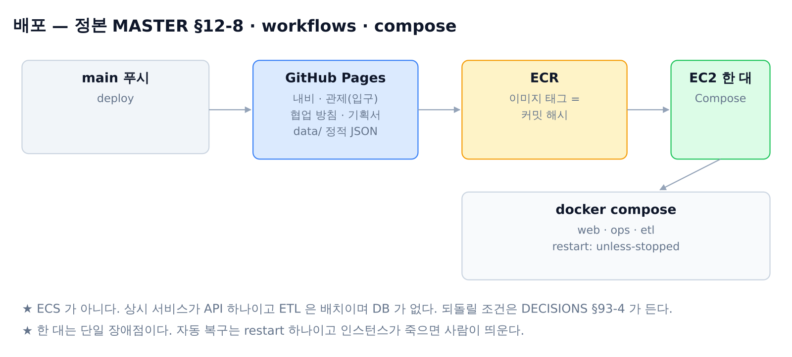
[그림 24] 배포 아키텍처 — EC2 단일 인스턴스 + Docker Compose
12. 산출물 목록
| 구분 | 산출물 |
|---|---|
| 문서 | 프로젝트 기획서(본 문서), 데이터 인벤토리, 요구사항 정의서, 테이블 명세서, API 명세서, 화면설계서, 평가 리포트, 최종 발표자료 |
| 데이터 | 정규화된 원천 데이터셋, 노딩 완료 세그먼트(5186/4326 두 벌), 폭 산출 결과, 등급 판정 결과, 관측점·세션 데이터 |
| 코드 | ETL 파이프라인(ingest·probe·build), 폭 산출 모듈, 그래프 구축·경로탐색 모듈, 비전 파이프라인, FastAPI 서버, mock 스트림 서버, React 대시보드, 실측 보조 웹 |
| 모델 | YOLO11-seg 학습·튜닝 결과, 프라이버시 마스킹 모델, 야간 강건성 실험 결과 |
| 평가 | 실측 정답지, 폭 정확도 측정 결과, 베이스라인 비교 결과, 민감도 분석, 시나리오 후보 목록 |
13. 갱신 이력
| 일시 | 내용 |
|---|---|
| 2026-08-09 | 원천 데이터 11종 재확보·정규화. ROAD_BT 사용 금지 확정, 도로구간 위상 문제 발견, 지도 스택 MapLibre 확정, 소방서 좌표 정정, 수치 상태 표기 규칙 도입 |
| 2026-08-10 | 프로젝트 기획서 작성 — 제안서·요구사항 분석서·상세 설계서 통합 |
| 2026-08-10 | 회의록 1~5회차(08-03~08-07) 반영. 기준 차종 펌프차 확정, 미러 돌출분 보정 방식 A안 채택, 화면 4색/내부 6상태 분리, 상시 사전계산 트리거, 경로 1·2·3순위, A* 휴리스틱 선호도 인코딩, GSD·drift 요구사항 신설, 촬영 골목 20곳 배분 반영 |